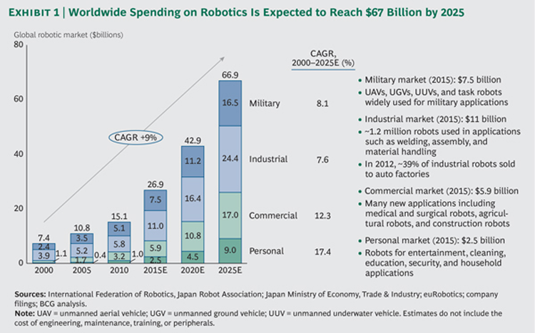
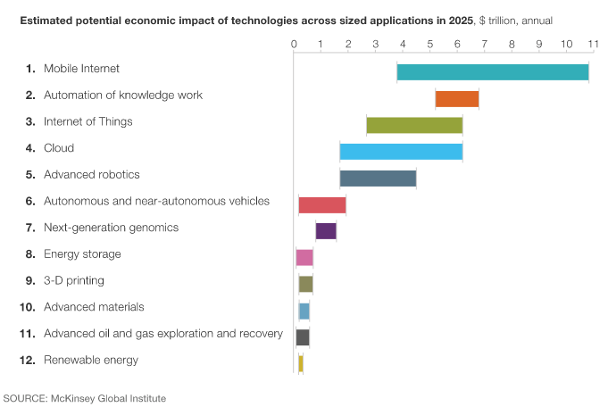
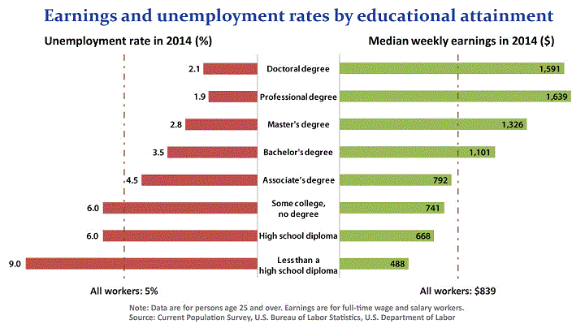
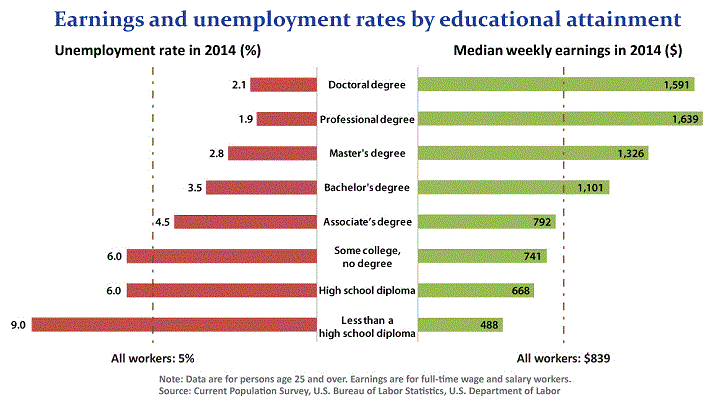
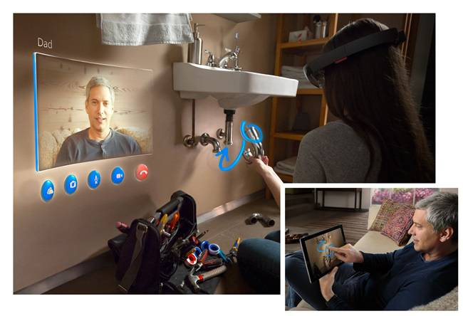
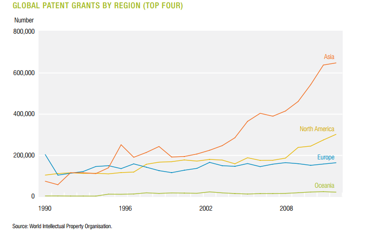
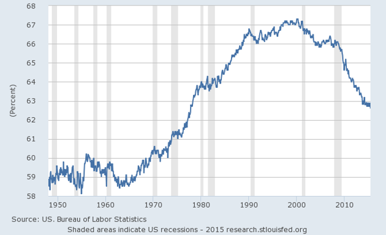
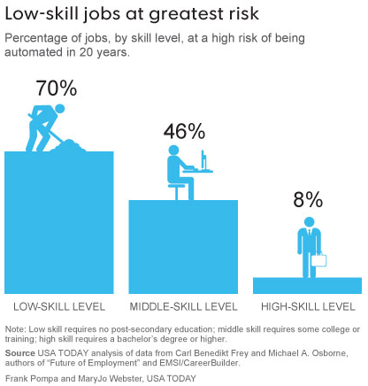
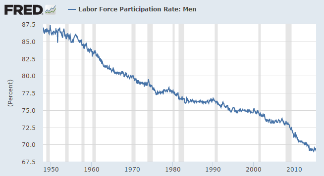
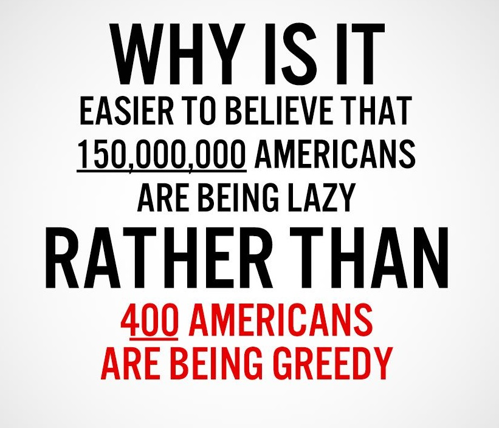

The transition last time round
In the past most people used to work on farms and actually experienced large amounts of
leisure time
Leisure Time -
Before capitalism, most people did not work very long hours at all.
The tempo of life was slow, even leisurely; the pace of work relaxed.
Our ancestors may not have been rich, but they had an abundance of leisure.
Manorial records from fourteenth-century England
indicate an extremely short working year
-- 175 days -- for servile laborers. Later evidence for farmer-miners,
a group with control over their worktime, indicates they worked only 180 days a year.
until eventually agriculture machines disrupted the farmers so many workers had to
relocate into city slums to
find work in factories -
“With the advent of industrialization, however, everything changed.
The new enclosure laws—which required that all grazing grounds be fenced in
at the owner's expense—had left many poor farmers bankrupt and unemployed,
and machines capable of huge outputs made small hand weavers redundant.
As a result, there were many people who were forced to work at the new factories.
This required them to move to towns and cities so that they could be close to their
new jobs. It also meant that they made less money for working longer hours.
Add to this the higher living expenses due to urbanization, and one can easily see
that many families' resources would be extremely stretched.
As a result, women and children were sent out to work, making up 75% of early workers"
The conditions and wages for factory workers were terrible for a
long time,
 Wages during the industrial transistion-
As Mr Mokyr notes, “life did not improve all that much between 1750 and 1850.”
For 60 years, from 1770 to 1830, growth in British wages, adjusted for inflation,
was imperceptible because productivity growth was restricted to a few industries.
Wages during the industrial transistion-
As Mr Mokyr notes, “life did not improve all that much between 1750 and 1850.”
For 60 years, from 1770 to 1830, growth in British wages, adjusted for inflation,
was imperceptible because productivity growth was restricted to a few industries.
Not until the late 19th century, when the gains had spread across the whole
economy, did wages at last perform in line with productivity.
it took years for the government to get involved and enforce a law banning
children under 9 from working in textile mills and for children aged 13-18
to not to work more than 69 hours a week.
It then took a further
34 years
Factory Laws -
1833 - A law bans children under 9 from working in textile mills. Children aged 13 to 18 are not to work more
than 69 hours a week.
1842 - A law bans children under 10 and women from working underground in mines
1844 - A law bans all children under 8 from working
1847 - A law says women and children can only work 10 hours a day in textile factories.
1867 - A law says women and children can only work 10 hours a day in all factories. (A factory is defined as a
place where more than 50 people work
1875 - A law bans boys from climbing up chimneys to clean them
to put in place a new law that says children can only work 10 hours a day.
According to
David F. Noble
the Luddites did not destroy machines because
of technophobia, but because of necessity. They had to choose between starvation,
violence against the capitalists, or property destruction. The last choice
was the most moderate way to protest against unemployment and the
lack of compassion of the factory owners.
The transition from agriculture to
manufacturing gave us much more prosperity in the long run but was
terrible for many people experiencing the transition.
The government, as evident in the past in England, has shown it is slow to react to suffering during a great
transition
and may struggle to
prepare
Jon Perry -
Change always brings with it risk and opportunity. The rapid emergence
of a growing number of technologies that can replace human “work” presents
both risks and opportunities. The real possibility of widespread and chronic
technological unemployment could result in unacceptable individual and societal
instability and adversity.
But those same technologies also have the potential
to enrich our lives and to free us from the drudgery and danger of manual,
boring labor and to enjoy a higher quality of life. To make this happen,
our laws, policies, assumptions and social contract must evolve as quickly
as our technologies will. There is thus an urgent need to identify, evaluate
and implement policies that can help manage and smooth our transition
into the new technological era
or even anticipate the technology
changes and effects in this new computer
driven
exponential digital age,
Vivek Wadhwa-
How are policy makers going to grapple with entire industries’ disruptions
in periods that are shorter than election cycles? The industrial age lasted
a century, and its consequent changes have happened over generations.
Now we have startups in Silicon Valley shaking up bedrock industries such
as cable and broadcasting, hotels, and transportation.
The writing is clearly on the wall about what lies ahead.
Yet even the most brilliant economists—and futurists—don’t know what
to do about it. We won’t be able to retrain the majority of the workforce
fast enough to take the new jobs in emerging industries. During the industrial
revolution, it was the younger generations who were trained—not the older workers.
Regardless, at best we have another 10 to 15 years in which there is a role
for humans. The only certainty is that much change lies ahead that no one
really knows how to prepare for.
where the pace of change is going to be so fast,
our linear minds will struggle to comprehend compared to previous change.
Technology is globally advancing at a pace we have never
experienced before in human history,
many vulnerable people can end up unnecessarily suffering in a fast and chaotic
changing work environment
if no adequate safety nets or solutions are in place for a person
to adapt and retrain their skills.
So even if enough new jobs are created it is irrelevant if the transition for people
displaced is not governed well, so this upcoming rise of the robots premise must not be
dismissed as
luddite
Vivek Wadhwa-
The technology elite who are leading this revolution will reassure you
that there is nothing to worry about because we will create new jobs just
as we did in previous centuries when the economy transitioned from agrarian
to industrial to knowledge-based. Tech mogul Marc Andreessen has called the
notion of a jobless future a “Luddite fallacy,” referring to past fears that
machines would take human jobs away. Those fears turned out to be unfounded
because we created newer and better jobs and were much better off.
True, we are living better lives. But what is missing from these arguments
is the timeframe over which the transitions occurred. The industrial revolution
unfolded over centuries. Today’s technology revolutions are
happening within years. We will surely create a few intellectually-challenging
jobs, but we won’t be able to retrain the workers who lose today’s jobs.
They will experience the same unemployment and despair that their forefathers
did. It is they who we need to worry about.
thinking, but valid concern for a society which is about
to find many of its major occupations quickly and continuously
disrupted
Navigating the Transition to a Better World -
Navigating the tension between these negative and positive perspectives
on the growing displacement of human labor by technology requires a
calculated and delicate effort to manage this critical period of transformation.
If handled poorly, the widespread displacement of workers by technology could
result in rapidly expanding economic divergence between rich and poor,
economic poverty and social unrest for growing numbers of dislocated workers,
backlashes against technology and social institutions, and economic and social
decline. If properly managed, the use of technology to replace mundane,
lackluster, repetitive, dangerous or strenuous labor, could free us to live
more enjoyable, meaningful and leisurely lives.
by
technological change.
"We won’t experience 100 years of progress in the 21st century — it will be more
like 20,000 years of progress (at today’s rate). The “returns,” such as chip
speed and cost-effectiveness, also increase exponentially.
There’s even exponential growth in the rate of exponential growth."
- Ray Kurzweil
Retail Transformation
This
chart below
of the
occupations
Federico Pistono-
Take a good look at the table above. Now answer this: how many occupations
were created in the last 50 years? The 34 occupations listed above make up
45.58% of the US Workforce. How many new jobs were introduced because of the
advances in technology? The answer is only one: computer and software engineers.
This profession barely makes it into the list at all. In fact, if we were to
exclude the bottom two, we would still have 44.12% of the economy represented,
and not a single type job was created in the last 50 to 60 years.
The reality is that the new jobs created by technology employ a very small
fraction of people, and even those jobs tend to disappear soon after they
are created. Think of the jobs created in the IT industry in the 1980s, and
how many of them survive to this day in 2012. If you were a programmer back then,
or a system administrator, and you did not study and learn the latest
developments, it would be very hard to find a job for you today. How many
occupations were created because of the introduction of a new technology,
only to disappear because an even newer technology came along?
with the largest employment in 2012,
It forms the main reason for concern about mass disruption in this rather lengthy article.
As the chart shows cashiers and retail salespeople were the 2 most common occupations in the entire economy in 2012. This is a low skilled role and often seen as a possible entry level role for people with no work experience. This occupation will be dramatically changed over the next 20 years. To explain why I will use an example of arbitrary general retail shop today that currently employs 10 people and their roles, I will show the changes that technology will have on this shop as an indicator for the whole of retail.
SHOP A
1 manager - supervises staff and finances
1 delivery driver - bringing new stock to the store
4 Checkout staff - serve customers
4 shop floor staff - stack shelves, clean and help customers
Technology will disrupt these roles in the coming years. We have already seen the rise in self checkout machines in grocery shops and it's set to increase
 Self Checkout-
The total shipments of self-checkout terminals to 27,000 for 2012 — and they forecast
that figure to continually increase. The number of self-checkout terminal shipments will
soar to 60,000 by 2018. Many new projects will be in the general merchandise sector,
notably in mass merchandisers and certain speciality retail subsegments.
even more as they enter general retail, substantially reducing the need for
as many checkout staff.
Soon shops won’t even have to buy as many costly self
checkout machines or hire cashiers as
self scan apps
Self Checkout-
The total shipments of self-checkout terminals to 27,000 for 2012 — and they forecast
that figure to continually increase. The number of self-checkout terminal shipments will
soar to 60,000 by 2018. Many new projects will be in the general merchandise sector,
notably in mass merchandisers and certain speciality retail subsegments.
even more as they enter general retail, substantially reducing the need for
as many checkout staff.
Soon shops won’t even have to buy as many costly self
checkout machines or hire cashiers as
self scan apps
 Self scan apps -
Tesco appears to have taken notice and has rolled out four high-tech checkouts
in its Lincoln store. It enables three shoppers to pack and pay at the same time
and ensures that the scanner will pick up item barcodes more easily. Grocer Asda
recently launched a smartphone scan-and go-trial at its superstore in York which
will allow customers to scan basket items via its app and pay at any till without
unloading their trolley.
using Apple and Google pay are about to enter the market.
In the future a person will be able to walk into a shop, grab an item, scan it with
their Apple watch and walk out the store with it, eliminating queuing time and offering
maximum
convenience
Convenience -
Using big data and wifi connections the shop will know who you are and what you like
when you walk in and offer you deals sending a notification to your smartwatch with
directions to dynamically priced goods which are on offer to you personally.
Self scan apps -
Tesco appears to have taken notice and has rolled out four high-tech checkouts
in its Lincoln store. It enables three shoppers to pack and pay at the same time
and ensures that the scanner will pick up item barcodes more easily. Grocer Asda
recently launched a smartphone scan-and go-trial at its superstore in York which
will allow customers to scan basket items via its app and pay at any till without
unloading their trolley.
using Apple and Google pay are about to enter the market.
In the future a person will be able to walk into a shop, grab an item, scan it with
their Apple watch and walk out the store with it, eliminating queuing time and offering
maximum
convenience
Convenience -
Using big data and wifi connections the shop will know who you are and what you like
when you walk in and offer you deals sending a notification to your smartwatch with
directions to dynamically priced goods which are on offer to you personally.
There could be increased security concerns such as shop lifting but these could be managed too by new technology. Shops could use advancing image recognition to recognise your face when you enter and tracking software could be used to spot thieves that leave with items not paid for or added to virtual baskets. for the customer. The 4 checkout staff in our general shop could be reduced in half to 2, one person managing the self checkout machines and 1 on the till, the 2 spare staff could go onto the shop floor but if the shop was managing fine with 4 people why would it need 6?
Retail workers have a median age of 38 in 2011, the average age of fast-food workers is 29, with more than 26% are parents raising children. Retail and fast food are not jobs which only employ teenagers as many falsely believe. They are not stepping stone jobs that people do until they find something else. These are the most popular jobs in the country, vast amounts of people and families rely on these jobs. If there is even a small percentage of jobs cut this can cause a big disruption effect for many people.
Transport and Food Service Industry
Lets leave the retail example for one moment and look at another popular employment just mentioned, the food service, which also looks to be disrupted by technology. The self service model from above can be applied to places that sell food Self Service - Customers can get many advantages self serving, they don't have to shout there orders in loud environments, language translation on screen, order with no mistakes, without having wait in line, dynamic nutrition guideline calculation. One strange argument against the use is “I wouldn't want to touch a screen that many people touch before I eat” which is irrational as we enter a pin no. to pay by card or handle cash which has probably been handled by thousands of people, without batting an eyelid. too.By using computer tablets at tables, the report found, restaurant owners can reduce the labor time of servers by 30 to 40 percent. For example, the report found that using tabletop tablets at an average mid-scale, casual dining restaurant chain, could double the maximum number of tables that a server could handle at a time from four to eight. This means the number of servers would drop from seven per shift to only five per shift — saving $30,500 in payroll costs.
Fast food delivery
 Autonomous Vehicles Self Service -
Amazon, DHL and Audi are to trial a service that allows car owners to use their vehicles
as mobile delivery addresses for parcel shipment.
Instead of walking to your door to collect the pizza you will walk a bit
further to a self driving delivery van parked outside, and through a self
service process collect your food/item.
Customers will prefer it because
they no longer have to tip drivers.
staff will be out a job the second
autonomous
Autonomous Vehicles -
They will make car sharing programs more prevalent. Similar to how AirBnB allocates people
who have a spare room with people who want one, the people who own self driving cars can
loan them out to other people who want to use them when they are not needed, such as
when the owner is working or asleep. This would allow self driving car owners to
make money without doing anything, this may incentivise and increase adoption of
self driving cars.
Autonomous Vehicles Self Service -
Amazon, DHL and Audi are to trial a service that allows car owners to use their vehicles
as mobile delivery addresses for parcel shipment.
Instead of walking to your door to collect the pizza you will walk a bit
further to a self driving delivery van parked outside, and through a self
service process collect your food/item.
Customers will prefer it because
they no longer have to tip drivers.
staff will be out a job the second
autonomous
Autonomous Vehicles -
They will make car sharing programs more prevalent. Similar to how AirBnB allocates people
who have a spare room with people who want one, the people who own self driving cars can
loan them out to other people who want to use them when they are not needed, such as
when the owner is working or asleep. This would allow self driving car owners to
make money without doing anything, this may incentivise and increase adoption of
self driving cars.
In 2010, Urban areas of the United States contain 80.7% of the population. 51% of americans commute 10 miles or less and 29% commute 1-5 Miles. There has been a large drop in the percentage of 16-39 year-olds getting a license. A study last year found that driving by young people decreased 23 percent between 2001 and 2009. Young people, which prefer to live in cities/urban areas, will be the early adopters of self driving cars. driving cars become available. The general public may be slow to adopt but businesses and startups will utilise them instantly as they will see the potential to out-compete rivals and increase profits by being able to deliver items and people safely at much lower costs. As of CES 2015, predictions for an on-sale self-driving car are on the order of two to five years away, or 2017 to 2020. We can now be fairly certain that these occupations will experience job disruptions over the next 20 years, as companies will be very quick to adopt these cost saving advantages.
-
- Taxi and Bus Drivers
Cheaper than owning a car -
One study found, for example, that an average 2-mile taxi trip in New York City costs
One study found, for example, that an average 2-mile taxi trip in New York City
costs $8 to $13, depending on traffic conditions. It estimated that a fleet of
9,000 driverless cars could replace the city’s fleet of Yellow Cabs and operate
for an average of 80 cents for a 2-mile trip. A more than 10-fold difference.
Taxi's get an extra seat availability as driver not present.
They can garner more efficient operation and use less gas by sending custom number of seat taxis for customers current needs. If computer route planning algorithms which find other people to share the ride with, similar to how UberPool works, then the fare could be even cheaper. -
- Truck and Delivery Drivers
 Cheaper Delivery -
Trucks can travel continuously, no breaks, holidays or sick days, less logistic route
or shift planning required, more time on the road. Most people would like items delivered
when they are home, companies won’t have to worry about getting staff to work evenings,
could have a custom delivery van wait outside which sends an alert to you to collect
package, could also combine with Amazon Air.
Cheaper Delivery -
Trucks can travel continuously, no breaks, holidays or sick days, less logistic route
or shift planning required, more time on the road. Most people would like items delivered
when they are home, companies won’t have to worry about getting staff to work evenings,
could have a custom delivery van wait outside which sends an alert to you to collect
package, could also combine with Amazon Air.
Diners, motels, gas station shops, places that are just businesses along the highway will lose customers as less truckers driving on highway having to stop off at towns overnight or for food. -
- Car Manufacturers and Car Salesmen
Car Manufacturers -
A car is often a person’s second largest capital expenditure, after a home, yet a car sits
unused some 90% of the time. Optimising use of cars will mean less need to be made Columbia
University's The Earth Institute forecasts the reduction of United States' fleet of vehicles
by a factor of 10.
The average number of vehicles per American household is currently 2.1. According to the study, that could dip as low as 1.2, a reduction of 43%, if self-driving cars become a reality and people take advantage of it as expected. 42% of American households need two cars today. If and when self-driving models are here, however, only 15% would need two vehicles available. The need for three or more cars would plunge as well, from 26.5% today to less than 2% in an era of self-driving cars that could “return-to-home” when the need arose. -
- Mechanics
Mechanics -
following on there being less cars being made then less maintenance work
would be needed such as yearly MOT's. Less car repairs
are required due to reduced number of crashes and less vehicle modifications
due to less people owning cars.
Public transport will become more of a viable option for people. as bus companies can afford to run more services. Also with tracking software similar to Uber cars people can plan their journeys better. A google maps integration which has every car on the road connected to waze, calculates how long until the bus will be at the stop nearest to you accurately and notifies when you should leave to catch the bus to work, no more waiting around in, almost on demand public transport allowing more convenience for people. If 20 people ditch their car for a bus then thats less mechanic work. -
- Doctors/Surgeons/Lawyers/Insurers
Safer Cars -
autonomous cars would be much safer, eliminate accidents cause by drunk driving
and human error. Some professions would have less work to do as less injuries to
drivers and pedestrians, would result in less insurance claims or injury lawsuits
and medical need.
Self Driving Electric Cars are no longer just mechanical, they are a digital device and will follow morse law, we shall see computing technology improve approximately 10,000 fold over the next 20 years and this will apply now to car technology. The affordability of autonomous driving systems will improve dramatically. A car you buy can continually improve due to software upgrades over the internet and become safer each update. -
- Traffic Cops, Driving Instructors and Parking Wardens
 Follow road rules -
people are not driving so don’t need to learn, cars will follow the
road rules so will not speed or drink drive as often
They will not need to park if ride sharing schemes become prevalent.
Follow road rules -
people are not driving so don’t need to learn, cars will follow the
road rules so will not speed or drink drive as often
They will not need to park if ride sharing schemes become prevalent.
-
- Train and Plane Industry
Faster On Demand Travel -
may lose some customers as self driving cars can travel faster,
Broggi believes that, “speed limits of up to 100 miles/hour (160 km/hour) are
absolutely possible by 2040.
Think of custom cars with TV's, game consoles or beds in, people will prefer not having to share journeys with other people(crying babies). Would allow people more comfort, ability to recline chair back or more space for leg room. Allows you to leave for your destination whenever you want, no more set times, schedule your self driving car to pick you up at any time or day, more convenience.
Driverless car research may also enable train drivers, pilots and boat operators to be replaced.
That is a lot of disruption in a short amount of time. But back to restaurants, even though they no longer need a driver they could see business opportunities increase and need for more cooks due to self driving cars as now it is financially cheaper for them to deliver meals to homes increasing the customer base. Yet a new advance in robotics is looking to make cooks obsolete soon, there is Momentum's burger robot which can make a burger in 10 seconds and there is even a robot on the horizon which can cook restaurant quality meals in peoples homes.
A startup which plans to release a robot with human like hands in 2018 for cooking meals. the company plans to build a digital library of 2,000 recipes before the kitchen is available to the wider public. Moley Robotics ambitiously aims to begin selling them as early as 2017. The robotic chef, complete with a purpose-built kitchen, including an oven, hob, dishwasher and sink, will cost £10,000 (around $15,000). Moley is working on improving the cooking robot’s functions and expanding its capabilities.
At such a low price, restaurant, fast food and other food preparation cooks and establishments will surely see disruption due to personal chefs becoming cheaper than a minimum wage worker. Even creative chefs looks like they could even be disrupted by IBM's Watson. Maybe some people will be able to afford them in their homes if they are not spending a large expense on owning a car, they may want to own a personal chef instead. Who wouldn't want a robot Gordon Ramsey in your kitchen, Future Home Cooking - Picture this scenario, you are at work and you fancy a roast dinner and freshly baked cake for desert in the evening, you check your smart fridge to see if you have the ingredients available, you find you are missing some so the fridge places an order to an online store to deliver the items at a convenient time when you are home. The items arrive, you stock them and the robot chef starts preparing the meal for you and notifies you on your smart watch when it is ready to eat. one that swears less though I imagine...
Picture this not too implausible scenario, Uber combines these cooking robots with its fleet of self driving cars, delivering cooked restaurant style meals as it travels to you without the need for a cook or a driver. It can be cheaper, arrive faster and arrive when you demand. This better service could disrupt local business which work in food preparation and delivery and don't have the capital to invest in robots or self driving cars as fast as Uber. Obviously many people enjoy the restaurant experience so they will always have customers but some may suffer a reduction in custom as alternative food services pop up in competition. This could pose disruption to restaurants and all the staff they employ.
Larry Page - “You can’t wish away these things from happening, they are going to happen, You’re going to have some very amazing capabilities in the economy. When we have computers that can do more and more jobs, it’s going to change how we think about work. There’s no way around that. You can’t wish it away.”
Cheaper and Smarter Robots
Shop floor staff in our example will be disrupted by robots eventually because the potential for robotics to autonomously perform tasks usually performed by humans is growing. Many companies are researching and competing to build human like robot hands such as NASA which says its less than 15 years a way. While we have hand technology quickly advancing to and above human level we have general purpose compliant robots like Baxter , Sawyer , KUKA , YuMi , UR3 or Justin which are now coming onto the market which are safe around and even programmable by children.If Baxter drops a screw while assembling something, it won’t continue on with the task. It will realize it’s dropped a screw, and pick up another before carrying on. If YuMi picks up a screw, but is holding it in the wrong direction it’s 3D sensing and 3D cameras in its hands will realize and reorient the screw. For simple assembly tasks, an unskilled person can train YuMi to do a task in 20 minutes.
Baxter has a base-price of $25,000 (£19,000), the equivalent of an average US production worker's annual salary. Baxter and Sawyer together can address many of the estimated 90 percent of manufacturing tasks that cannot be feasibly automated with traditional solutions today.
These are the first generation, they will get better
 Baxter -
It's performance keeps improving through regular software releases.
In 2014 it completed the same task almost 3 times faster versus the
2013 version of the software.
Baxter -
It's performance keeps improving through regular software releases.
In 2014 it completed the same task almost 3 times faster versus the
2013 version of the software.Intera 3 is the latest and by far the most impressive version of our revolutionary software platform for manufacturing and production applications - with twice the speed, precision, and motion quality. software and hardware and lower in price, they will get the improved robotic hands so they are even more dexterous and gain powerful AI capabilities. One deep-learning AI capabilities - One deep-learning algorithm enables a robot to operate a machine it has never seen before. Robobarista' can figure out your new coffee machine,Show the robot how to operate your coffee machine, and it will take over from there.
In the near future we may have household robots to handle cooking, cleaning and other menial tasks. They will be teachable: Show the robot how to operate your coffee machine, and it will take over from there. algorithm enables a robot to operate a machine it has never seen before. Another new deep learning technique enables robot mastery of skills via trial and error. AI capabilities - UC Berkeley researchers have developed algorithms that enable robots to learn motor tasks through trial and error using a process that more closely approximates the way humans learn, marking a major milestone in the field of artificial intelligence.
They demonstrated their technique, a type of reinforcement learning, by having a robot complete various tasks — putting a clothes hanger on a rack, assembling a toy plane, screwing a cap on a water bottle, and more — without pre-programmed details about its surroundings. Team KAIST recently managed to navigate DARPA's Robotics obstacle course in under 45 minutes by successfully completing eight natural disaster-related tasks including walking over rubble, driving a car, tripping circuit breakers, and turning valves, demonstrating roughly the competence of a two-year-old child. How long until the technological breakthrough and innovation is applied to other tasks? Vivek Wadhwa - "After watching the DARPA Challenge and observing the rapid advances of computing, artificial intelligence, and sensor technologies, I see Rosie being very close to reality. These technologies are all advancing at exponential rates. And exponential technologies can be deceptive. Things move very slowly at first, but then disappointment turns into amazement. That is what I believe will happen with robotics over the next five to 10 years.
Amazing progress is being made in the underlying hardware and software. In part, that’s because costs have plunged. The single-axis controller, a core part of most robots’ inner working, has plunged in price from $1,000 to $10. And according to Rob Nail, the chief executive of Singularity University, the price of critical sensors for navigation and obstacle avoidance has fallen from $5,000 to less than $100." The driverless car completed the Darpa challenge 10 years ago as an indicator to how fast this technology can improve.
Computers have been following Moore’s Law Moore’s Law - C.E.O., Brian Krzanich summarized where Moore’s Law has taken us. If you took Intel’s first generation microchip, the 1971 4004, and the latest chip Intel has on the market today, the fifth-generation Core i5 processor, he said, you can see the power of Moore’s Law at work: Intel’s latest chip offers 3,500 times more performance, is 90,000 times more energy efficient and about 60,000 times lower cost. which roughly means they keep doubling in computational power every 2 years, they also get cheaper and smaller at a rapid pace. This increases in computational power and rise in available data is allowing Machine Learning algorithms such as Deep Learning to be more successful in powerful tools like Computer Vision Computer Vision - We're teaching computers to understand pictures, computer vision expert Fei-Fei Li describes the state of the art — including the database of 15 million photos her team built to "teach" a computer to understand pictures — and the key insights yet to come and Natural Language Processing. NLP - The Robot can be programmed by casually talking to it teaching robots to understand instructions in natural language from various speakers, account for missing information, and adapt to the environment at hand. What robots learn can be added to a cloud and be used by other robots, creating a huge collective brain that continually improves and accumulates robotics knowledge. Once one robot has mastered a task this knowledge can be shared instantly to all other robots.

Scientists and engineers seem to be able to get around the limitations that threaten Moore's law by developing new technologies. There may come a wall, when 2-D silicon chips as we know them today can become no faster in terms of their clock speed, and transistors can get no smaller. At that point it is likely that 3-dimensional chip stacking will take off, or chips will change their substrate from silicon to graphene, or quantum computing will mature, or completely new silicon architectures will emerge. - Marshall Brain
The price in robots is dropping, this is why spending on robots worldwide is expected to jump from just over $15 billion in 2010 to about $67 billion by 2025. Robots presently perform only 10% of manufacturing tasks, but that is expected expected to rise to 25% by 2025 as robots become more affordable and able to perform more tasks. “Within five to 10 years, the business case for robots in most industries will be compelling, even for many small and midsized manufacturers. The total cost of owning and operating an advanced robotic spot welder has plunged 27% from an average of $182,000 in 2005 to $133,000 in 2014, the price is forecast to drop by a further 22% by 2025. As robots get cheaper and better they can be used to build other robots, Build other robots - At some factories, robots are even building other robots, producing about 50 robots per 24-hour shift and operating unsupervised for as long as 30 days at a time. cutting down the future manufacturing costs substantially.
Robots are getting so cheap they are replacing Chinese workers. Chairman Terry Gou said Foxconn Technology Group will be able to replace 30% of its workers on the production lines with robots in five years’ time. Another company in China is planning to increase use of robots.
"It is pushing toward putting 1,000 robots in use in its first phase of the zero-labor project. It said the company has already put first 100 robots on the assembly line. "The 'zero-labor factory' does not mean we will not employ any humans, but what it means is that we will scale down the size of workers by up to 90 percent," said Chen Qixing, the company's board chairman. Guangdong authorities said in March that they will invest $152 billion to replace humans with robots within three years. The local government will push for application of robots in 1,950 companies across the province and plans to build two advanced industrial bases for robot production by the end of 2017."
Hotel staff already face disruption from new technology such as AirBnB, they could soon be set to face more disruption by robots, Japan will open the world's first hotel entirely operated by robots
 Robot hotel staff -
The hotel will open in Sasebo, Japan on July 17. Robots will carry luggage, clean rooms
and manage reservations.
"We will make the most efficient hotel in the world," Hideo Sawada, company president,
said during a press conference. "In the future,
we'd like to have more than 90 percent of hotel services operated by robots."
this summer.
How long until waiter robots become available to bring food out to customers tables,
pick up empty dishes of the table and wipe down and set the table?
How long until Baxter's dexterity and vision AI allow it to perform haircuts and other
complex tasks thought impossible.
Looking at the shop example again now with this new
information discussed of effects of exponentially increasing
technology, compliant robots, improving hand dexterity, cheaper prices,
and advancing AI leading
to the ability to perform more tasks autonomously.
The 4 Workers are still needed to stack the shelves, clean the store and help
customers but each of these roles look like
they could be done by robots within 20 years time.
Amazon is working on getting various items from shelves using robots pickers for
its
fulfilment warehouses
and a company called
Fetch Robotics
has robots which can travel to and pick items from a shelf and place it into baskets in warehouses.
The compliant robots such as Baxter has been
given wheels
so is now capable
of performing even more tasks that were once unique to humans.
Robot hotel staff -
The hotel will open in Sasebo, Japan on July 17. Robots will carry luggage, clean rooms
and manage reservations.
"We will make the most efficient hotel in the world," Hideo Sawada, company president,
said during a press conference. "In the future,
we'd like to have more than 90 percent of hotel services operated by robots."
this summer.
How long until waiter robots become available to bring food out to customers tables,
pick up empty dishes of the table and wipe down and set the table?
How long until Baxter's dexterity and vision AI allow it to perform haircuts and other
complex tasks thought impossible.
Looking at the shop example again now with this new
information discussed of effects of exponentially increasing
technology, compliant robots, improving hand dexterity, cheaper prices,
and advancing AI leading
to the ability to perform more tasks autonomously.
The 4 Workers are still needed to stack the shelves, clean the store and help
customers but each of these roles look like
they could be done by robots within 20 years time.
Amazon is working on getting various items from shelves using robots pickers for
its
fulfilment warehouses
and a company called
Fetch Robotics
has robots which can travel to and pick items from a shelf and place it into baskets in warehouses.
The compliant robots such as Baxter has been
given wheels
so is now capable
of performing even more tasks that were once unique to humans.
Advanced robotics could generate a potential economic impact of between $1.9tn and $6.4tn (£1.3tn to £4.4tn) per year by 2025 according to the McKinsey Institute. All this including better sensor technology and more data to use will advance the potential of robots in the future to perform even more complex tasks we never thought they could, tasks which make even self driving cars look elementary in comparison. Without being too over ambitious we can imagine in the next 20 years that telling a more advanced version of Baxter to go face up the fruit, check if the cake aisle is stocked, check all the bananas for ripeness or milk is out of date, stack empty shelves with the items from the stockrooms, spot spills and broken items and clean them up and so on. The 4 staff that were performing shop floor tasks could be reduced by half due to robotics.
Jeremy Howard - "In the Industrial Revolution, we saw a step change in capability thanks to engines. The thing is, though, that after a while, things flattened out. There was social disruption, but once engines were used to generate power in all the situations, things really settled down. The Machine Learning Revolution is going to be very different, it never settles down. The better computers get at intellectual activities, the more they can build better computers to be better at intellectual capabilities, so this is going to be a kind of change that the world has actually never experienced before, so your previous understanding of what's possible is different."
Knowledge Work
Next lets looks at providing customer service with technology. As much of the muscle work has been replaced, the brain work required in the service sector is starting to be face a similar fate as technology catches up. Software has the potential to disrupt a wide range of office work. Improvements in AI is allowing more customer service workers, back office, clerical, secretarial and many types of support staff performing routine tasks or “low-level knowledge economy work” White-collar workers - Warren – the name given to the system, in homage to investor Warren Buffett – is part of a new army of “smart” machines that are threatening to invade office life. These computers do not just collect and process information; they draw inferences, answer questions and recommend actions, too. will be replaced with a digital workforce of software bots.
"Software bots are far cheaper and quicker than their physical robot cousins. White collar workers on the other hand are numerous, high skilled and expensive. This means from a business perspective the incentive to replace them with automation is even greater than for low skilled work and manual labour. Paper work, discovery, analysis, IT Work, Kenneth Brant, research director at Gartner - "It's worth remembering that IT cost is typically about four percent of annual revenue, whereas the labor costs that can be rationalized by smart machines are as high as 40 percent of revenue in some knowledge and service industries.
The supply side of the market — including IBM, GE, Google, Microsoft, Apple and Amazon — is placing large bets on the success of smart machines, while the demand side includes high-profile first movers that will trigger an 'arms race' for acquiring and/or developing smart machines."" decision making and writing – all key features of white collar work and the professions – could end up under threat." - Chris Thompson
The capacity of machines to replicate aspects of human thought is set to most radically reshape the labour market. These advances mean that activities previously considered forever outside the scope of programming Nathan Taylor CEDA Chief Economist - Since the start of the computer revolution, the real cost of computing has created large economic incentives for employers to substitute labour for computer capital. However, these efforts have been blocked because the tasks that computers are able to perform are only those that a programmer can perfectly define. Specific routines have been required for all possible contingencies.
As a consequence computerisation have been limited by the degree to which technological advances allow engineers to sufficiently specify problems. For instance, it was once thought that it would be impossible for a computer to come close to a human driver in traffic. The sheer number of potential contingencies of driving through a busy city, with automobiles and pedestrians contesting the use of space, was thought to be such to forever defeat a programmer. But the computer is now out of the box. are increasingly being undertaken by computers. Cognitive computing systems such as IBM’s Watson get better over time as they build knowledge and learn a domain. Rather than being programmed to anticipate every possible answer or action needed to perform a function or set of tasks, cognitive computing systems are trained using AI algorithms to sense, predict, infer and, in some ways, think. Newer generations of Watson
 Watson -
IBM Research is exploring the next step of a machine’s ability to model human intelligence:
generating ideas the world has never been imagined before demonstrating computational creativity.
A system that can model human intelligence
and generate new ideas has many applications and the opportunity
to transform customer experience.
are currently being trained in customer service as a support representative.
Individual consumers can interact with Watson in plain English
to get personalized responses to questions and receive actionable insight with supporting
evidence and confidence to help create the experiences customers expect.
As just one of many examples, a bank might offer Watson directly to customers
to help understand the types of savings accounts and facilitate the opening of
the account that meets their requirements.
Between 2010 and 2013,
the cost
of the servers that comprise Watson, IBM’s AI supercomputer,
fell by at least 50%.
Watson -
IBM Research is exploring the next step of a machine’s ability to model human intelligence:
generating ideas the world has never been imagined before demonstrating computational creativity.
A system that can model human intelligence
and generate new ideas has many applications and the opportunity
to transform customer experience.
are currently being trained in customer service as a support representative.
Individual consumers can interact with Watson in plain English
to get personalized responses to questions and receive actionable insight with supporting
evidence and confidence to help create the experiences customers expect.
As just one of many examples, a bank might offer Watson directly to customers
to help understand the types of savings accounts and facilitate the opening of
the account that meets their requirements.
Between 2010 and 2013,
the cost
of the servers that comprise Watson, IBM’s AI supercomputer,
fell by at least 50%.
"One obvious area of shrinkage is the back office. A reason why small companies scale up into mid-size ones is the need to bring in a range of supporting functions—such as book-keepers, marketers and secretaries—and then middle managers to look after such functions Over the past decade technology has been steadily digitising these roles. In the next ten years much of this will either be automated or else simply handled by external specialists. One major back-office role that will shrink in many firms is the information technology (IT) function: 76% of executives think that it is either highly or somewhat likely to be handled by external partners in the coming decade." - Economist Intelligence Unit
A company called SmartAction SmartAction - IVA is best handling customer experience calls, both inbound and outbound. Armed with the powerful IVA, we solve business problems using a variety of applications across a broad range of industries. We make a phone call effortless.
IVA combines artificial intelligence, natural language, and speech recognition to make customer service calls feel natural and painless for callers. IVA is so responsive and intelligent that sometimes customers think they are actually talking to a live agent!
Useful for Payments, Order Entry & Returns, Outbound Alerts, FAQs, Account Status, Scheduling, Surveys, Technical Support and Info Access & Verifications uses an Intelligent Voice Automation bot to handle calls. It has natural language ability to be conversational and dynamically generate personalised conversations. Firms such as L’Oréal and VetOnline already use NLP software for customer support Customer support - Kensho’s system is designed to interpret natural-language search queries such as, “What happens to car firms’ share prices if oil drops by $5 a barrel?” It will then scour financial reports, company filings, historical market data and the like, and return replies, also in natural language, in seconds.
The firm plans to offer the software to big banks and sophisticated traders. Yseop, a French firm, uses its natural-language software to interpret queries, chug through data looking for answers, and then write them up in English, Spanish, French or German at 3,000 pages a second on their websites. on their websites. Google's Neural Network Chatbot is able to discuss Philosophy and IT troubles.
"Automated intelligent assistants are already hard at work doing customer support, sales, marketing, retail, healthcare, utilities, education, and hospitality, the AIAs are designed to recognize real-world implementations that are the pinnacle of real-time natural language understanding, knowledge management, machine learning, and conversational technologies." - Speech Technology
Siri, Google Now and Cortana didn't even exist 5 years ago, how much smarter will these personal assistants be and in 7 years when a smartphone becomes as computationally intelligent Vivek Wadwa - "Kurzweil, a renowned futurist and the director of engineering at Google, now says that the hardware needed to emulate the human brain may be ready even sooner than he predicted — in around 2020 — using technologies such as graphics processing units (GPUs), which are ideal for brain-software algorithms. He predicts that the complete brain software will take a little longer: until about 2029.
The implications of all this are mind-boggling. Within seven years — about when the iPhone 11 is likely to be released — the smartphones in our pockets will be as computationally intelligent as we are. It doesn’t stop there, though. These devices will continue to advance, exponentially, until they exceed the combined intelligence of the human race. " as the human brain, what will they be capable of in 20 years? You may actually start to think there is an actual person in your phone.
Journalism has the potential to be disrupted with software that can write stories that are indistinguishable from humans, they are at work now writing many sport and financial stories, in 20 years they will be incredibly more advanced. Middle management Automate Managers - While there will always be some people supervising the work of other people, changes in technology, business culture and demographics are all conspiring to upend what has long been standard practice in companies. We should no longer expect traditional job ladders for managers to move up the ranks, or even retaining the notion that middle managers are the glue that connects workers and ensures goal alignment up and down the hierarchy.
This is different. Rather than managerial “rules of thumb” to guide such decision-making, real data based on past behaviours has become remarkably effective at predicting what we like to consume.
All of these changes — technology, business culture, and demographics — add up to a world where middle managers will be less valued, and less needed. It’s already started, and I see no reason why it won’t accelerate. is on its way to becoming virtually extinct Workers and Automata - It would be interesting if the same ruling classes were outraged should an anthropomorphic robot sit down at the desk of the CEO or an AI replace the manager in the control room of a multi-national. If he were alive,
Karl Marx would probably say that that the bourgeoisie wakes up to the ethical problem once the robot reveals itself able to replace also the manager, the artisan, the medical doctor, the teacher, when it acquires the ability to make decisions – and not only the proletarian at the assembly line.
Again, the dominant group equates itself with humanity and turns its own political problem, its own class interests, into a universal ethical problem.- Warren Bennis due to more efficient and advanced algorithms generated by AI. Recruitment is already being automated AI - A new wave of start-ups — including Gild, Entelo, Textio, Doxa andGapJumpers — is trying various ways to automate hiring. They say that software can do the job more effectively and efficiently than people can. Many people are beginning to buy into the idea.
Established headhunting firms like Korn Ferry are incorporating algorithms into their work, too. If they succeed, they say, hiring could become faster and less expensive, and their data could lead recruiters to more highly skilled people who are better matches for their companies. and showing better results such as a more diverse workforce. All it could take is one huge company like Google or Facebook, who already wants data about people for advertisers so why not salary, work history, grade levels etc, to acquire one of the start ups or make their own system to disrupt the recruitment/HR process. They could create a powerful standardised application form, comprehensive online recruiting job/employee search system with their large user bases and use their advanced natural language understanding capabilities to read CV's and match jobs to people better, and cheaper, than a human could ever do.
Mihir Shukla is CEO of Automation Anywhere - "Take the example of invoice processing. In a week or two a software bot will learn how to process those invoices at your company and begin doing it by itself. In that sense it behaves like a robot, but is software. In the next 5-7 years we will have ten million of these in the market. So this is a huge wave, and it will transform the very basic definition of how we work and at what efficiency. It will transform what productivity means. Software is already defining the workforce today and that will certainly accelerate."

On its own, each technology has the capacity to change business activity. Taken together, they have the potential to radically reshape society, businesses, the workforce and the economy. These technologies are likely to significantly boost efficiency while eliminating many historic jobs. Big Data is allowing non-routine tasks to become programmable, when there is sufficient information available, machine learning can be applied, aiding the computerisation of more tasks. The Internet of Things is another key development has been the improvements in sensory technology, which make its use relatively cheap. In 2012, there were five billion devices connected to the internet, including computers, phones, music devices, vehicles and appliances. This will grow to 22 billion by 2020. This is a major source of information driving Big Data. Coupled with declining costs and expanding capabilities of robots, sensor technology will make entirely new opportunities to computerise and routinise work. The IoT is likely to have an application in, or be used by, every vertical segment in the economy. This will lead to digitisation of the physical world where then it becomes an exponential technology.
“General-purpose computers have replaced every other device in our world. There are no airplanes, only computers that fly. There are no cars, only computers we sit in. There are no hearing aids, only computers we put in our ears. There are no 3D printers, only computers that drive peripherals. There are no radios, only computers with fast ADCs and DACs and phased-array antennas.” - Cory Doctorow
Computers will make individuals far more productive than they currently are and significantly reduce the demand for these types of workers. This is not a new trend, but the pace of change is potentially considerably faster than in the past. Many people who work in the services performing routine knowledge work are set to be disrupted by powerful digital technologies and ubiquitous connectivity. All it takes is one company to use any of these knowledge automation technologies to gain a competitive edge and other companies will have to compete. “Every company is becoming, or already is a software company. Even if they don’t know it yet. We buy TVs online with Kogan. We bet online … we buy cars, property and insurance online … We can get a degree online now with Open Universities, and then go on to find a job with Seek. Each of these is disrupting billion dollar industries with software.” - Scott Farquhar
McKinsey Global Institute found that there were 230+ million knowledge workers in 2012 which accounts for 9% of the global workforce and 27% of global employment costs. They predict a $5–7 trillion potential economic impact by 2025 of automation of knowledge work. "Over the next 10 years, the work of 110 million to 140 million knowledge workers around the globe may be handled by cognitive robotic process automation systems. his shift to robotic process automation -- which digitizes labor through the use of advanced machine intelligence, engagement, analytics, big data, social media, mobile technologies and cloud computing -- will change the knowledge worker labor market as we know it." - KPMG's Cliff Justice.
"The world’s capital is flowing towards automation and away from investing in human labour simply because automation has a better ROI. This is the tipping point economically speaking and there is no return from it. In January, the Economist ran a big profile naming over a dozen jobs sure to be taken over by robots in the next 20 years, including telemarketers, accountants and retail workers. In other words, in any job involving forms processing, there’s less and less need for a human to be involved." Kamila Hankiewicz CEO at Amuse
Applying Robotic and Knowledge Automation to Retail
Returning back to our shop example and knowledge of software and its capabilities we can foresee that some customer service work could soon be performed without humans, in fact customer service robots OSHbot - The OSHbot will greet customers, ask if they need help and guide them through the store to the product. Besides natural-language-processing technology, the 5-foot tall white robot houses two large rectangular screens—front and back—for video conferences with a store expert and to display in-store specials.
The head features a 3-D scanner to help customers identify items. OSHbot speaks English and Spanish, but other languages will be added. are already helping humans in shops. Using all this information about advancing technology in robotics and software and the fact they can do the jobs better and more cheaply than human beings, and that advantage doubles every two years, lets looks at our present shop today(A) and a future shop(B) in 20 years time.
The future modernised shop B is able to employ less people and serve many more compared to a brick and mortar store. B will be able to get increased profits from less wage expenditure. The robot capital may be expensive at first but should eventually pay off if the cost of employing a human is higher than a machine or software bot over time. This modernisation process is inevitable because company shareholders will look at ways to maximise profits and out compete rival businesses, any opportunity to get an advantage will be capitalised upon. Companies which don’t adapt and stay relevant and persevere with the old way will be left behind, just like Kodak or Blockbuster, no companys wants to make those same mistakes Peter Diamandis - “We grew up with Kodak being one of the mainstay brands of the world. In 1996 Kodak was at the top of their game. It was a 28 billion dollar company with 140,000 employees that 20 years earlier had invented the digital camera, but failed to see the potential of it. In 2012 Kodak declares bankruptcy, effectively disrupted by the very technology that they had invented. They didn’t understand what exponential growth would look like.”
“What’s interesting is that in 2012 Instagram gets acquired by Facebook. They’re also in the digital image business, but they’ve got 13 employees with a one billion dollar valuation. The difference between what is an exponential company and the linear one is this kind of disruption. I call it the new Kodak moment.” and remain stagnant and let other businesses pounce on the new models and technology and let other customers choose their better cheaper and more convenient services. Shops A’s will have to modernise or face becoming obsolete but without a shadow of a doubt the single biggest disruptor to either A or B will be the Fully Autonomous Online Shop C.
Shop C - 1 man and 1 dog Factory of the Future - "The factory of the future will have only two employees, a man and a dog. The man will be there to feed the dog. The dog will be there to keep the man from touching the equipment." - Warren Bennis
Shop A is doomed and even though Shop B has modernised it will face stiff competition from Shop C. In 20 years you will view an item from the comfort of your own home using Augmented reality.
 AR -
AR will let you see furniture, carpet, wallpaper and items
in the home before you buy it so need to go to the shops.
3D scanning tech will allow accurate body scanning to get
the perfect fitting clothes.
No need to go to the physical shops
to see the item
Even 3D virtual shops could exist if people like the "old
fashioned" way of shopping.
Seconds after you order your item a Kiva robot will spring into action and
bring the shelf to the
to a robot picker which will grab the item and stock it into
self driving van
AR -
AR will let you see furniture, carpet, wallpaper and items
in the home before you buy it so need to go to the shops.
3D scanning tech will allow accurate body scanning to get
the perfect fitting clothes.
No need to go to the physical shops
to see the item
Even 3D virtual shops could exist if people like the "old
fashioned" way of shopping.
Seconds after you order your item a Kiva robot will spring into action and
bring the shelf to the
to a robot picker which will grab the item and stock it into
self driving van
 UBER Logistics -
Uber is getting into the transportation of goods as well as people,
partly why its valued at near $50bn.
Uber has the biggest research and development budget out there
on the driverless vehicle front.
to be with you within the hour or
an
autonomous drone
UBER Logistics -
Uber is getting into the transportation of goods as well as people,
partly why its valued at near $50bn.
Uber has the biggest research and development budget out there
on the driverless vehicle front.
to be with you within the hour or
an
autonomous drone
 Amazon Air -
Amazon Air drones may be available
within the year
and will be able to track the location of the person it is delivering to by pulling data from their
smartphone.
People will be able to choose from a variety of delivery options - from
"bring it to me" to nominating their home, place of work or even "my boat"
as places for packages to be dropped.
to be with you within
30 mins.
3D
home Printing
Amazon Air -
Amazon Air drones may be available
within the year
and will be able to track the location of the person it is delivering to by pulling data from their
smartphone.
People will be able to choose from a variety of delivery options - from
"bring it to me" to nominating their home, place of work or even "my boat"
as places for packages to be dropped.
to be with you within
30 mins.
3D
home Printing
 3D printers -
The number of 3D printers in use is expected to double every year,
from almost 62,000 in 2013 to nearly 2.5 million in 2018.
The performance of 3D manufacturing is improving.
The range of materials that can
be used in 3D manufacturing is expanding and the prices
(for both printers and materials)
are declining.
where you can buy product designs and print them at
your own home cheaply and
repeatedly is even more disruption to shop B.
The high street will be at your front door, no travelling to shops,
having to find the item, avoid people, queue, carry it back home and other
inconveniences. Most goods are cheaper online, the only thing holding online
shopping back today is the long wait for goods and inconvenient delivery times
which looks to be eliminated soon.
Brick and mortar will have stiff competition with this level of convenience and many
shops B's which have already reduced staff will have to close, as the virtual shop
becomes far superior to the physical.
3D printers -
The number of 3D printers in use is expected to double every year,
from almost 62,000 in 2013 to nearly 2.5 million in 2018.
The performance of 3D manufacturing is improving.
The range of materials that can
be used in 3D manufacturing is expanding and the prices
(for both printers and materials)
are declining.
where you can buy product designs and print them at
your own home cheaply and
repeatedly is even more disruption to shop B.
The high street will be at your front door, no travelling to shops,
having to find the item, avoid people, queue, carry it back home and other
inconveniences. Most goods are cheaper online, the only thing holding online
shopping back today is the long wait for goods and inconvenient delivery times
which looks to be eliminated soon.
Brick and mortar will have stiff competition with this level of convenience and many
shops B's which have already reduced staff will have to close, as the virtual shop
becomes far superior to the physical.
Technology is disrupting the very nature of employment. For the shop B’s that do manage to compete with shop C many remaining workers may face disruption in employment conditions and lower incomes. Just like how Uber has turned taxi employees into independent contractors and refuses to treat them as “employees” so it doesn’t have to pay minimum wage, Obamacare health insurance, unemployment insurance, no guarantee of stability, worker’s compensation or pensions, this kind of employment could infect many other occupations as companies look to cut cost to compete with C. If a freelancing app is created for retail the staff that remain will face less employment benefits, less full time employment opportunities and more competition for their roles which could go to the lowest bidder, pushing down wages.
A 2013 report estimates that roughly a third of the US workforce, more than 40 million, consists of temps, part-timers, contractors, contingent workers, freelancers/independent workers and those who are under-employed or work without employer-sponsored health insurance, 401Ks or FLEX accounts” according to a report by the Harvard Business Review. By 2020, 40 percent of the US workforce will consist of freelancers according to a study by Intuit. Across Europe, the number of professional self-employed independent contractors has risen 45 per cent since 2004. Over the last four years, all new jobs the UK added to its workforce have been accounted for entirely Workforce Trend - The self-employed sector has grown by 570,000, to around 4.5 million, a 14.2 per cent increase compared with a 4.3 per cent increase in the number of employees. Of the UK workforce, 14.7 per cent is now self-employed – the highest percentage since records began. by self-employed people. A Government study in the UK predicts the the way we work will be vastly different Future of Work 2030 - What could the UK’s future of work look like in alternative scenarios?
1. Forced Flexibility (BAU) Greater business flexibility and incremental innovation lead to modest growth in the economy, but this flexibility often results in fewer opportunities and weakened job security for the low-skilled.
2. The Great Divide Despite robust growth driven by strong high-tech industries, a two-tiered, divided society has emerged, reinforcing the divergence in the economic positions of the ‘haves’ and ‘have nots.’
3. Skills Activism Technological innovation drives the automation of white-collar work and brings large-scale job losses and political pressure, leading to an extensive government-led skills programme.
4. Innovation Adaptation In a stagnant economy, improved productivity is achieved through rigorous implementation of ICT solutions. in 2030 and there will be an increase in agency staff or Zero hour contracts Future of Work 2030 - As businesses shrink their workforces to a minimum using flexibly employed external service providers to cover shortfalls, a much smaller group of employees will be able to enjoy long-term contracts. “The idea of a single education, followed by a single career, finishing with a single pension is over” which transfer financial risks to employees. A study by Deloitte found Canadian organizations are reaching out to the “open talent economy.” 47% of Canadian respondents plan to increase their use of contingent, outsourced, contract or part-time workers in the next three to five years. 80% view workforce capability as an important trend—and 53% see it as a long-term priority for their organization."
"Traditional employment will no longer be the norm. replaced by contingent workers such as freelancers and part-time workers. The long-term trend of hiring contingent workers will continue to accelerate with more than 80% percent of large corporations planning to substantially increase their use of a flexible workforce."
A new report was carried out by Oxford Economics and reveals that replacing members of staff incurs significant costs Recruitment costs - There are two main factors that make up this cost:
The Cost of Lost Output while a replacement employee gets up to speed
The Logistical Cost of recruiting and absorbing a new worker. for employers, £30,614($47,669) per employee. When a company has to make a decision between an upfront cost of a for new staff + wages or a $47K smart machine + electricity cost, which will make more financial sense? It is in the interest of every company to employ a minimum number of workers, pay them a minimum salary and have the highest productivity. We are looking at the possibility of vastly different models of employment and a reduced need for roles in popular occupations. The latter will impact many people as they find they can not compete with machines which will work 24/7, every day of the year with no breaks, holidays, sick days, lateness, distractions, tiredness, hangovers, complaints, strikes, wage rises, overtime pay, training or retraining, compensation, insurance, severance pay, contract negotiations, bonuses, maternity leave, law suits, require pensions and only demand a ‘salary' equal to the cost of energy. The machines will always follow procedure, be reliable, consistent, won't procrastinate, talk back or unionise, they behave rationally without emotion eliminating human error or bias, they won't commit occupational fraud or disclose proprietary information, they can be easily improved with new software updates, they require less floor space such as staff rooms, toilets or kitchen facilities and the machines get cheaper, smaller, smarter, more energy efficient and double in computer power every 2 years.
Low Skilled Workers
A recent study Future of Employment - The current 10 most employed jobs in the US:
1# Retail Salesperson (most employed job as of 2012) : 92% likelihood of automation (#570 of #750)
2# Cashiers : 97% likelihood (#657)
3# Office Clerks, General : 96% likelihood (#629)
4# Food Preparation Workers : 87% likelihood (#508)
5# Registered Nurses : 0.9% (#46). One of the few top jobs that will be relatively safe.
6# Customer Service Representatives : 55% (#315)
7# Waiters and Waitresses : 94% (#592)
8# Secretaries and Administrative Assistants, Except Legal, Medical, and Executive : 96% (#634)
9# Janitors and Cleaners, Except Maids and Housekeeping Cleaners : 66% (#367)
10# Laborers and Freight, Stock, and Material Movers, Hand : 85% (#483)
by 2 researchers at Oxford found nearly half of U.S. jobs, and 70% of low-skill jobs, could be susceptible to computerization over the next two decades. The study found that occupations within the service industry are highly susceptible, 92% for retail salespeople, 97% for cashiers, 96% for general office clerks, 81% for fast food cooks, 96% for restaurant cooks, 87% for food preparation workers, 94% for wait staff and 77% for bartenders all being replaced by automation within 20 years. While the original study assumes that in the US 47% of all jobs are at risk, it is at 59% for Germany according to a calculation of the economists of the bank ING-Diba. The authors believe that the greater weight of industry is responsible for the difference in Germany.
Deloitte, the Big Four accountancy firm, and the University of Oxford found that 35% of existing UK jobs at high risk of replacement in next twenty years, and that lower-paid jobs over five times more likely to be replaced than higher-paid. Angus Knowles-Cutler, London senior partner at Deloitte, said: “Unless these changes coming in the next two decades are fully understood and anticipated by businesses, policy makers and educators, there will be a risk of avoidable unemployment and under-employment. A widening gap between ‘haves’ and ‘have nots’ is also a risk as lower skill jobs continue to disappear.”
The last time the labor-participation rate(62.6%) was as low as June 2015 was almost 40 years ago. Nobel prize-winning economist Joe Stiglitz has a new NBER paper out that comes to a conclusion that the robots really are coming for your job. Some people believe Scott Santens - Technology has paradoxically begun requiring more hours. The combined effects of technology and the globalization enabled by it are eating jobs, but for those left working (who are by and large earning less), they actually need to workmore.
Instead of jobs requiring the 5-6 hours of work a day they actually on average now require, we clock in more than 8 hours as a matter of survival. Instead of working one full-time job 40 hours a week, we work one full-time job 47 hours a week, or multiple part-time jobs even more than 50 hours per week to compensate for the lower pay.
We're actively being forced to work a greater number of hours thanks to the effectiveness of the tools we created to require fewer hours. this is already taking place with recent job statistics. Bill Gates - "Software substitution, whether it's for drivers or waiters or nurses … it's progressing, Technology over time will reduce demand for jobs, particularly at the lower end of skill set. 20 years from now, labor demand for lots of skill sets will be substantially lower. I don’t think people have that in their mental model."
The original study indicates that 70% of low-skill positions have a high risk of being automated in 10 to 20 years, compared to 46% of mid-skill jobs and 8% of high-skill jobs, the best correlation today to avoiding unemployment currently is more education. With many more middle skilled Technological growth and expansion - As digitalisation grows, we can expect a significant impact on employment and skills in the decades ahead, at all levels and in all sectors. The shrinking middle will challenge the workforce. The high-skilled minority (characterised by their creativity, analytical and problem solving capabilities and communication skills) will have strong bargaining power in the labour market, whilst the low-skilled will bear the brunt of the drive for flexibility and cost reduction, resulting in growing inequality.
Jobs which have traditionally occupied the middle of the skills hierarchy and earnings range, such as white collar administrative roles and skilled / semi-skilled blue collar roles, are declining at a significant rate due to changes in work organisation driven by technology and globalisation. There is evidence that new types of jobs are emerging to fill the middle ground but these have markedly different entry route workers being displaced, the people without or just with high school qualifications will find it the hardest to compete for work and good wages. The entry-level wages for high school-educated men and women in 2011 were far below
 High school wages -
For instance, the entry-level hourly wage of a
young high school-educated man in 2011 was 25.3 percent less than that for the
equivalent worker in 1979, a drop of nearly $4.00 per hour (in 2011 dollars).
their 1979 or 1973 levels.

High school wages -
For instance, the entry-level hourly wage of a
young high school-educated man in 2011 was 25.3 percent less than that for the
equivalent worker in 1979, a drop of nearly $4.00 per hour (in 2011 dollars).
their 1979 or 1973 levels.

The apparent solution for the majority would be to go to college and gain better skills but this may not be possible or suitable for some people who find themselves displaced for many reasons, a big one would be if college and living expenses keep rising and less part time work is available for support them as they study. Another is adults who have families or mortgages to pay for will find it even more difficult. Without a college education, even though college educated people as a whole are not doing as well College Grad Wage Drop - “Six years into the recovery, the share of recent college grads who are “underemployed” (in jobs that historically haven’t required a degree) is still higher than it was in 2007—or, for that matter, 2000.
And the supply of these “non-college jobs” is shifting away from high-paying occupations, such as electrician, toward low-wage service jobs, such as waiter. More people are pursuing higher education, but the real wages of recent college graduates have fallen by 7.7 percent since 2000.” as they used to, many people may find they have less economically viable skills that they can perform better than a machine and have so much more competition for the reduced amount of low skilled jobs available. Unless cheaper education solutions such as Mooc's start to be acknowledged by employers. Other solutions are discussions are discussed later on. The only current alternative would be to intern Intern conditions - Goldman Sachs did, however, decide to formally review the case of interns overworking, which culminated in their decision to officially limit their interns to a 17-hour work day. On June 17, Goldman Sachs released a new set of employment restrictions following a two-year inquiry into the death of one of their interns.
On August 15, 2013, 21-year-old Moritz Erhardt was found dead after experiencing seizures found to be caused by exhaustion. Erhardt had worked 72 hours straight before his death. for free to gain skills but that is only possible if you have income support so excludes people from poor backgrounds whose family are unable to support them while they gain experience, further reducing social mobility.
Trade, Vocational and High Skilled Jobs
One solution to avoid the debt of college but still earn a reasonably wage is to go into the trades but this too looks suspectible to disruption. The Future of Employment study by the Oxford researchers found these trade jobs have an 80% or higher probability of computerisation within the next 20 years.
- Welders, Cutters, Solderers, Brazers.
- Land Scaping, Painting, Coating, and Decorating Workers.
- Electrical and Electronics Installers and Repairers.
- Construction Laborers, Roofers, Plasterers,Floor Sanders and Finishers, Carpet Installers.
- Cement Masons, Concrete Finishers, Stonemasons, Brickmasons and Blockmasons.
- Structural Iron and Steel Workers, Jewelers and Precious Stone and Metal Workers.
- Tailors, Dressmakers, Custom Sewers, Barbers, Butchers and Meat Cutters.
Carpenters, Glaziers and Home Appliance Repairers were also listed above 70%.
An analysis from the Committee of Economic Development of Australia warns more than five million jobs, almost 40% of jobs, could disappear in the next 10 to 15 years because of technological advancements, it found that technology is set to wipe out 60 per cent of rural jobs. Other large occupations such as Construction will face disruption. Houses, Apartments and Warehouses can be prefabricated using 3D printed off site then assembled on site, bridges can be 3D printed on site. They may have growing pains and bugs initially but refined over the 20 years, to have electronics and plumbing built in and better energy efficiency, faster build time and increased strength and durability than traditional building methods. There is also a robot bricklayer called Hadrian which currently can build a whole house in two days, human house builders have to work for four to six weeks to put a house together as a comparison. Imagine designing your actual house like you do on The Sims, the door, windows, floors, paint colours etc. then having a 3D printer print it overnight, transported to you by driverless trucks and have a Hadrian type robot assemble it the next day.
Many jobs and tasks that people think can't be automated or outsourced such as a plumber could be partially outsourced using technology eventually. Augmented reality could allow remote people to get together in the physical world, future tasks may not even need a physical expert on location. The possibilities of advancing augmented reality tech like Microsoft's Hololens could enable this. Many people already attempt to fix things themselves using information from the internet, e.g. If your shower is broken and you need it fixed then you can go online and look for information, you may find general help but may not get specific instructions or useful information, if you video call an expert to help the interaction is limited, they could say turn the valve but they can’t point or select to it, if a task requires 2 hands then its restrictive to point the camera and get advice at the same time and other communication restraints.
With augmented reality headset which is 3D scanning the shower pipes an expert can now annotate on things in your environment such as drawing a circle on what you need to focus on, what not to touch, which way to turn, etc allowing a more immersive experience when guiding someone through a process. The first Microsoft demo of the HoloLens actually had someone helping another person fixing a sink, so they have this type of application in mind during development.

If you are missing tools to fix the shower then a home 3D printer will allow you to print the correct size valve, pipe or spanner.
Image from SolidSmack
There are also other ways new technology could disrupt local expertise by allowing self service Self Service Tree Surgery - A start up could create a tool rental service utilising self driving vans and apps. An example use case would be you need to use a chainsaw to cut a tree, you use the app and a self driving van drops it off.
You then use another app to get a remote tree surgeon who shows you where you need to cut(possibly AI has got so advanced it can guide you where to cut)they get a fee from using their knowledge, and picks it up when you are done and charges you a fee which would be less than buying a chainsaw or hiring a tree surgeon who owns a chainsaw.
You could get live expert advice from someone in a different country who doesn't even speak the same language as you using translation tools. in the trades tasks. These models are obviously not possible for everything, especially in dangerous tasks, maybe the item just can't be fixed without a local professional but the inspection, consultation and diagnosing the fault and fix may go down in cost by outsourcing it to a remote person which may disrupt labour opportunities for the local person.
Erik Brynjolfsson - “I think that there are bigger technological changes likely in the next ten years than there were in the last ten years and we know that those were pretty disruptive for the economy.” Right now I don’t think we’re taking it seriously enough. “It’s not a matter of slowing down the technology, it’s a matter of speeding up our response to it.”
A middling Hollowing out of the Middle Class - From 1999-2007 in the US, the low-skilled end of the distribution saw even larger increases in employment share, while the middle-skilled segment again experienced share loss; the high-skilled segment saw no change. Thus, while both low-skilled and high-skilled occupations increased their employment shares over the past two decades, the middle-skilled occupations faced consistent share losses.
In the two most recent US recessions, in 2001 and 2008-2009, reduced employment accounted for 98% of the decline in GDP, while productivity was barely affected. The labor market, meanwhile, has steadily split, with menial low-wage jobs on one end and high-skill, high-wage careers on the other. out of skills is taking place. Highly skilled occupations look the least likely to face disruption but that dosent mean all are safe, some high skilled High Skilled - The McKinsey Global Institute recently released a report on a dozen major new technologies that it considers likely to be ‘disruptive,’ upsetting existing market and social arrangements. Even a quick scan of the report’s list suggests that some of the victims of disruption will be workers who are currently considered highly skilled, and who invested a lot of time and money in acquiring those skills.
For example, the report suggests that we’re going to be seeing a lot of ‘automation of knowledge work,’ with software doing things that used to require college graduates. Advanced robotics could further diminish employment in manufacturing, but it could also replace some medical professionals. workers who have spent years gaining skills are at risk of their skills becoming devalued. High Skilled - Nobel Prize winner Paul Krugman added his voice to this debate with an article significantly entitled “Sympathy for the Luddites.” This economist recognizes that, in the past, the painful problems generated by mechanization were solved thanks to the more intensive education.
However, the problems generated by artificial intelligence are not solvable the same way, because they effect educated workers as well. Thus, today, “a much darker picture of the effects of technology on labor is emerging.” There is a 94% probability of accountants, auditors, paralegals and legal assistants, all being replaced by automation within 20 years according to a study by Carl Frey and Michael Osborne. Robots and artificial intelligence (AI) will dominate legal practice within 15 years, perhaps leading to the “structural collapse” of law firms, a report predicting the shape of the legal market has envisaged. A study by Gartner found one-third of highly skilled work by doctors, Robot Doctors - Machines will replace 80 percent of doctors in a healthcare future that will be driven by entrepreneurs, not medical professionals, according to Sun Microsystems co-founder Vinod Khosla. Khosla went on to refer to common medical practice as being akin to voodoo, saying "healthcare is like witchcraft and just based on tradition" rather than data driven, as he believes it should be.
Machine learning, he argues, will be a more efficient, cheaper and more accurate diagnosis tool one day. At one point, he even compares medical diagnosis to Google's driverless smart car technology, saying that the latter is more difficult to develop than an accurate diagnostics machine. lawyers, traders and professors will instead be done by smart machines, or by less-skilled workers using computers by 2023.
"Most business and thought leaders underestimate the potential of smart machines to take over millions of middle-class jobs in the coming decades, Job destruction will happen at a faster pace, with machine-driven job elimination overwhelming the market's ability to create valuable new ones." - Kenneth Brant, research director at Gartner.
Finance is susceptible to large amounts of disruption by technology according to Vivek Wadhwa. Finance - Wadhwa explains that innovations such as crowdfunding and Bitcoin represent disruptions to the financial industry as well. Banks, he says, will have to reinvent themselves if they want to stay in business. Experiments involving crowdfunded loans are already being made outside the U.S. "You're now moving into cardless transactions for purchasing goods. We may not need the banks anymore. We may not need financial institutions the way we do right now."
The U.S. would risk falling behind if it concerns itself too much with preventing the financial industry's inevitable evolution. Today Watson, using its cognitive computing tools is used to create targeted cancer therapy based on you and your cancer’s genetics by using Big Data. They will diagnose IBM's Watson - In 2013 IBM’s Watson's successful diagnosis rate for lung cancer is 90 percent, compared to 50 percent for human doctors. In 2011, IBM announced that Watson had "learned" the same amount of knowledge as the average second-year medical student.
Watson's ingestion of more than 600,000 pieces of medical evidence, more than two million pages from medical journals and the further ability to search through up to 1.5 million patient records for further information gives it a breadth of knowledge no human doctor can match. your health Less Physicians - “I don’t think physicians will be seeing patients as much in the future,” says David Lee Scher, a former cardiac electrophysiologist and the president of DLS Healthcare Consulting, which advises health-care organizations and developers of digital health-care technologies.
“I think they are transitioning into what I see as super-quality-control officers, overseeing physician assistants, nurses, nurse-practitioners, etc., who are really going to be the ones who see the patients.” better than any human could, your mobile phone Xprize Tricorder - Peter Diamandis who runs the XPrize Foundation says people will become the CEO of their own health. Wearables will be tracking your vitals constantly, allowing you and others to make better health decisions. By the end of this year Diamandis will have the 1st step towards a personal doctor in your pocket this the Tricorder
The mobile health market will grow from $5.1 billion in 2013 to $41.8 billion in 2023—an eightfold increase, this is why many companies are looking to get into this market. will be like having a team of the worlds best medical experts in your pocket. Your phone will also become your optician. Optician App - A smartphone app is as effective at testing eyesight as an optician's clinic, a trial suggests. The team in London, with colleagues in Scotland, modified a smartphone to develop a series of eye tests that could be used with little training and were easily portable.
The Portable Eye Examination Kit (Peek) uses the phone's camera to scan the lens of the eye for cataracts.rather than using bulky eye examination equipment costing in excess of £100,000. It uses the camera's flash to illuminate the back of the eye to check for disease.
"Consider a world where patients are constantly being monitored by biosensors on their bodies and the data from those sensors is being assessed in real-time by machine-learning algorithms looking for anomalies, and diagnosis is performed by a Watson-like computer. Under these circumstances, the number of patients each physician can deal with will rise and thus there will be a need for fewer physicians per head of population than today." - Hugh Bradlow
In the distant future, 30+ years away imagine robots mining
 Automated Mining -
Robots may hold the key to preventing an industrial crisis in a country whose
geography makes many key jobs undesirable. The company is working to automate
its drilling and crushing as well as the dozens of mile-long trains that ship
nearly a million tonnes of iron ore to the coast each day.
and sorting the minerals collected to allow robots and
3D printers
3D printed Solar panels -
A printer has been able to make prototypes of the solar cells
in order to improve their efficiency. The technology consists of a type of
“solar ink” which is designed to capture sunlight and turn it into electricity.
A fine layer of this ink is then deposited onto a material, such as plastic.
This allows for cells to be embedded into windows to generate electricity
or to be used to charge devices such as smartphones and laptops.
to convert
it storage batteries, wind turbines and
ultra efficient
Solar Power-
Solar Power To Become Cheapest Source Of Energy In Many Regions By 2025,
German Experts Say.
By 2025, the report says, the cost of producing power in central and
southern Europe will have declined to between 4 and 6 cents per kilowatt hour,
and by 2050 to as low as 2 to 4 cents, making it the cheapest source
of energy in many parts of the world.
solar panels which are more effective
at price per watt than coal, gas, oil, nuclear or other options eliminating
need for workers in those industries, we already saw what happended to the
fracking industries when the price of oil went down, what happens when
price of energy goes down as a whole? There will be less need for
energy grid companies if people
are self sustainable. With abundant cheap energy agriculture can then
be done
indoors,
Indoor Farming -
The world's largest indoor farm —25,000 square feet of futuristic garden
beds nurtured by 17,500 LED lights in a bacteria-free, pesticide-free environment
produces about 10,000 heads of fresh lettuce harvested each day.
The unique "plant factory" is so efficient that it cuts food waste
from the 30 to 40 percent typically seen for lettuce grown outdoors
to less than 3 percent for their coreless lettuce.
with robots harvesting food at zero marginal cost.
Lab grown
meat
Lab Grown Meat -
In 2 years the cost of lab-grown burger patty has dropped
from $325,000 to $11.36, if the trend continues eventually
it could be cheaper, tastier, healthier(
No saturated fat, no heme iron, no growth hormone—cultured meat seems
to have many potential benefits. If eating fat-free cultured meat would
also mean a drop in calorie intake, then there would be an added decrease
in diabetes risk.and lead to the end of battery farming.)
means no need for livestock farmers, even
milk
could one day be created in labs.
Plus if
nuclear fusion is ever
achieved
we will see a huge disruption
for human roles in energy, manufacturing,
agriculture and mining industries in the future.
Automated Mining -
Robots may hold the key to preventing an industrial crisis in a country whose
geography makes many key jobs undesirable. The company is working to automate
its drilling and crushing as well as the dozens of mile-long trains that ship
nearly a million tonnes of iron ore to the coast each day.
and sorting the minerals collected to allow robots and
3D printers
3D printed Solar panels -
A printer has been able to make prototypes of the solar cells
in order to improve their efficiency. The technology consists of a type of
“solar ink” which is designed to capture sunlight and turn it into electricity.
A fine layer of this ink is then deposited onto a material, such as plastic.
This allows for cells to be embedded into windows to generate electricity
or to be used to charge devices such as smartphones and laptops.
to convert
it storage batteries, wind turbines and
ultra efficient
Solar Power-
Solar Power To Become Cheapest Source Of Energy In Many Regions By 2025,
German Experts Say.
By 2025, the report says, the cost of producing power in central and
southern Europe will have declined to between 4 and 6 cents per kilowatt hour,
and by 2050 to as low as 2 to 4 cents, making it the cheapest source
of energy in many parts of the world.
solar panels which are more effective
at price per watt than coal, gas, oil, nuclear or other options eliminating
need for workers in those industries, we already saw what happended to the
fracking industries when the price of oil went down, what happens when
price of energy goes down as a whole? There will be less need for
energy grid companies if people
are self sustainable. With abundant cheap energy agriculture can then
be done
indoors,
Indoor Farming -
The world's largest indoor farm —25,000 square feet of futuristic garden
beds nurtured by 17,500 LED lights in a bacteria-free, pesticide-free environment
produces about 10,000 heads of fresh lettuce harvested each day.
The unique "plant factory" is so efficient that it cuts food waste
from the 30 to 40 percent typically seen for lettuce grown outdoors
to less than 3 percent for their coreless lettuce.
with robots harvesting food at zero marginal cost.
Lab grown
meat
Lab Grown Meat -
In 2 years the cost of lab-grown burger patty has dropped
from $325,000 to $11.36, if the trend continues eventually
it could be cheaper, tastier, healthier(
No saturated fat, no heme iron, no growth hormone—cultured meat seems
to have many potential benefits. If eating fat-free cultured meat would
also mean a drop in calorie intake, then there would be an added decrease
in diabetes risk.and lead to the end of battery farming.)
means no need for livestock farmers, even
milk
could one day be created in labs.
Plus if
nuclear fusion is ever
achieved
we will see a huge disruption
for human roles in energy, manufacturing,
agriculture and mining industries in the future.
STEM Opportunities
Some economists, politicians and parents may still be thinking everything will be fine because more people will train to work in STEM STEM - Acronym for Science, Technology, Engineering and Maths. occupations such as computer scientist or electrical engineers, as increasing the use of robots will require more talented scientists and engineers to program, design, and maintain them. Some politicians go as far to want STEM only universities, but do we aspire for a society Ugly without art - Sure a video game needs programmers but the music, voice acting, story, graphics, character and world design all are substantially improved by artistic knowledge. Books, Films, plays, tv shows, music are all valuable to many of us. We should be able to encourage kids to study their passions and value all higher educating for the benefits it's bring to society in culture, leisure or not just in GDP stats. which discourages people from studying humanities or the arts? Suppose we encouraged all the retail, food prep, transport, clerical workers, trade workers and so on who face disruption, into retraining into STEM;1) Not every person has the ability to learn these difficult skills - almost half of US bachelor’s degree students who entered STEM fields between 2003 and 2009 had left these fields by spring 2009. In engineering, of every one hundred who start, only fifty-five make it to a degree. The subject with the highest drop out rate in the UK is Computer science.
2) Not every person has the desire or opportunities to study STEM subjects - the current trend is that women don’t want to study STEM subjects, only about a quarter of workers in STEM fields were women in 2011. Just 18% of computer and information sciences bachelor’s degree recipients were women in 2013. African-American and Latino workers also now represent 29 percent of the general workforce population, but just 16 percent of the advanced manufacturing workforce, 15 percent of the computing workforce and 12 percent of the engineering. workforce.
3) There is not enough STEM jobs for STEM graduates, the shortage of stem workers is a complete myth STEM Myth - “If there was really a STEM labor market crisis, you’d be seeing very different behaviors from companies, You wouldn’t see companies cutting their retirement contributions, or hiring new workers and giving them worse benefits packages. Instead you would see signing bonuses, you’d see wage increases.
You would see these companies really training their incumbent workers.” “None of those things are observable,” Hira says. “In fact, they’re operating in the opposite way.” A 2014 study by the National Science Board found that of 19.5 million holders of degrees in STEM, only 5.4 million were working in those fields
The Center for Economic Policy and Research, tracing graduates from 2010 through 2014, discovered that 28 percent of engineers and 38 percent of computer scientists were either unemployed or holding jobs that did not need their training. "A compelling body of research STEM MYTH - Were there to be a genuine shortage at present, there would be evidence of employers raising wage offers to attract the scientists and engineers they want.
But the evidence points in the other direction: Most studies report that real wages in many—but not all—science and engineering occupations have been flat or slow-growing, and unemployment as high or higher than in many comparably-skilled occupations. " is now available, from many leading academic researchers and from respected research organizations, no one has been able to find any evidence indicating current widespread labor market shortages or hiring difficulties in science and engineering occupations that require bachelor's degrees or higher...All have concluded that U.S. higher education produces far more science and engineering graduates annually than there are S&E job openings—the only disagreement is whether it is 100 percent or 200 percent more."
There aren't enough jobs available in STEM for everyone displaced to transition into. It only makes up about
5.5% of the U.S. workforce. STEM vacancies may not be able to grow quickly enough. The BLS projects that in the decade ending in 2022, the number of engineering jobs will have increased only by 8.6 percent, which falls short of the 10.6 percent rise expected for the workforce as a whole. Most striking are forecasts for the chemical, mechanical, and electrical specialties, long mainstays of the profession. Together, the three are estimated to grow by only 4.3 percent, well under half the expected growth in the workforce.
The transitions for the workforce from agriculture, to manufacturing, from manufatoring to service sectors took decades. The world can't go to STEM as a major sector in 20 years, even if it did somehow, far fewer skilled workers are needed to maintain automated industries that are displaced by that automation. Paradoxically pushing more people into STEM jobs could increase the rate of automation, and disruption, even more so.
Gerald Huff - “New high skilled jobs do not make up a high proportion of employment, 90% of US employees work in occupations that existed 100 years ago. Between 1993 and 2013, 23 million net jobs were created but only 1.3 million were in high tech industries and it remained just 6% of the workforce, the majority of job growth the U.S. is retail sales, which currently has about 200,000 openings. In the second spot is fast food workers, followed by cashiers and waiter and waitress jobs.
Even if the US somehow managed to create a large STEM sector then it will still face global competition, just like the manufacturing sector, soon STEM occupations will increasingly suffer from outsourcing. In fact more than 370,000 science and engineering jobs in the United States were lost in 2011, according to the Bureau of Labor Statistics. Electrical and electronic engineering has been heavily outsourced abroad, US employment in 2013 declined to about 300,000, down from about 385,000 in 2002. The same could happen to programming jobs, I think it would be arrogant to say it's never possible because US programmers are “superior” and other countries are are full of “low quality devs” which is what any debate into outsourcing software jobs turns into presently. What is evident is the suggested “superiority” will not be around for much longer, many countries have caught up and doing better educating their population, American high schoolers are dramatically trailing behind comparable countries — especially in Math.
"There is a global race for STEM skills and other countries are heavily investing and increasing the supply of STEM students, 41% of all degrees awarded by Chinese institutions in 2011 were in a STEM subject, almost twice the proportion of STEM degrees awarded in the UK and three times the rate in the US. China now stands behind only the United States in the number of science and technology journals published annually, and is expected to overtake the US in scientific output within few years, according to a recent study by the Royal Society. By 2020, China expects to have nearly 195 million community college and university graduates — compared with no more than 120 million in the United States. Accenture predicts that Brazil will increase its engineering graduates by 68% by 2015 and will produce more PhD engineers than the US by 2016." A relatively highly educated workforce has been a traditional source of advantage, however, the rapid rise in global education means this historic strength is being eroded, the increasing numbers of highly educated people in the world will inevitably increase the international competition Global Recruitment - As mentioned above in knowledge section with recruitment being automated, a company can post a job, a computer reads it, using its big data and machine learning optimisatiom to find the best matches worldwide, drawing on a global pool for the best workers, matching skills with demand instantly for you, you conduct the interview using VR and you hire them the same day. for the goods and services they produce. Global mobility will also play a significant role in hiring practices as employers look internationally to recruit talented workers. China, India and Brazil beginning to compete for talent and provide the skills sought by organisations at a competitive cost.

Salaries for computer science in the US are high, the average starting salary for a computer graduate in the US is $66,800 compared to $33,807 in the UK. What happens when a US company can easily hire 2 UK developer or 5 Chinese US Outsource - A funny story is the US software developer who outsourced his job to China and spent his workdays surfing the web, watching cat videos on YouTube. He reportedly paid just a fifth of his six-figure salary to a company based in Shenyang to do his job. for the price of a US one? Some people can already work without being face to face remotely Remote Working Increase - Between 2001 and 2010 in the UK, for example, the proportion of people working mainly from home rose by 21%, to cover 12.9% of the workforce—or some 3.7m people or from home or thanks to improvements in communication Slack - is a messaging app for teams: everything in one place, instantly searchable. In March 2015, Slack signed a deal with investors to raise up to $160 million in a funding round that values the company at $2.76 billion technologies but most companies still need people to come into the office, this will change in the future, soon staff will be able to work as efficiently and collaboratively as they could if they were physically in the office. This global diffusion of job opportunities will be aided by the rise of virtual networks. Connected Planet - Everyone around the developing world will have fast reliable internet allowing environment for immersive solutions that allow realistic telepresence deliver high definition and realistic representation of distance scenes both from a video and audio perspective (which we refer to as immersive communications), thereby allowing effective telepresence.
Hyper connective technology is creating an on demand workforce where companies or people can get global access to independent free agent expertise for a year, month or project. Websites and online talent-sourcing platforms are proliferating. In some cases, registered workers bid for simple work, such as a few hours of writing merchandising copy for websites. Other platforms offer the services of high-skill professionals or entire teams for projects such as software development. Digital disruption will continue redefining what goods and services need to be produced locally and what can be outsourced to other countries, digital disruption Digital disruption - Consider the case of Elance-oDesk, which allows businesses to engage with over nine million freelancers who bid on specific jobs. In this marketplace, which does over a billion in turnover a year, location is no barrier with workers competing to win bids from all over the world.
Businesses like Elance-oDesk eliminate the barriers of distance and significantly expand the supply of workers. This provides great opportunities, for businesses in terms of the quality of the work done and workers by exposing them to a wide variety of potential business opportunities, but it does mean people from all over the world compete on a level playing field. is levelling the playing field in which professionals operate. When a company in the US can easily tap into labour pools in India, China, China Surplus of Highly Skilled - The agricultural revolution was about specialized technology that couldn’t be implemented in other industries. You couldn’t take the farm machinery and have it go flip hamburgers. Information technology is totally different. It’s a broad-based general purpose technology. There isn’t a new place for all these workers to move.
You can imagine lots of new industries—nanotechnology and synthetic biology—but they won’t employ many people. They’ll use lots of technology, rely on big computing centers, and be heavily automated
The reality, however, is that China has struggled to create enough white-collar jobs for its soaring population of college graduates. In mid-2013, the Chinese government revealed that only about half of the country’s current crop of college graduates had been able to find jobs, while more than 20 percent of the previous year’s graduates remained unemployed. According to one analysis, fully 43 percent of Chinese workers already consider themselves to be overeducated for their current positions Brazil, it will increase competition and surplus of people willing to do STEM jobs and lower scarcity of workers with those skills. The FT reports more and more people work for virtual platforms instead of companies; work is auctioned to pools of remote contractors.
Thomas Friedman on the Globalization of Higher Education - "In the past, workers with average skills, doing an average job, could earn an average lifestyle. But, today, average is officially over. Being average just won’t earn you what it used to. It can’t when so many more employers have so much more access to so much more above average cheap foreign labor, cheap robotics, cheap software, cheap automation and cheap genius. Therefore, everyone needs to find their extra — their unique value contribution that makes them stand out in whatever is their field of employment. Average is over."
In 2030 the global labour market will be highly competitive with virtualisation of the workforce, literally. This video of real time graphics rendering combined with a virtual reality headset makes it very likely that virtual immersive environments will be possible in the future. 3D scanning tech which companies are working on such as Google's Project Tango and Faceshift which live captures facial expressions to computer generated characters, will make it possible to add your 3D self into this realistic virtual world and be able to interact and communicate with others and have it feel truly immersive. It’s likely facebook will add their expertise on the social side too with Oculus, making conversations and interactions feel natural. Analysts at PiperJaffray recently said it expects virtual reality to be the megatrend of the next 30 years, with Oculus leading the charge. They compared the market to the mobile phone industry of 15 years ago.
"The future of this technology is going to be “pretty wild, our mission is to give people the power to experience anything, even if you don’t have the ability to travel somewhere, or to be with someone in person, or even if something is physically impossible to build in our analog world,” - Mark Zuckerberg
In the future when you have ubiquitous and even more advanced next generation oculus headsets that FB bought for $2bn, Microsoft’s Hololens or whatever the secretive Magic Leap AR company Google invested $500million into, you know with that much technical expertise and money invested it’s not just gaming that they want to change, it’s real life. Combining improved VR/AR hardware with exponentially increased graphics rendering, collaborative work in the virtual world will be staggeringly immersive. In the future going to work could be as simple as putting on the headset. The technology may reach a point where companies may prefer the virtual over the physical VR Office Advantage - Its much cheaper than a real office, To run a virtual “office” environment you would just need a powerful server and fast internet compared with a physical office building where you need parking space, rent costs, maintenance, repairs, heating, electricity, cleaners, toilet, food/kitchen facilities and equipment( people working from home provide their own computer, chair or table equipment).
If you want to expand a physical office, you need to move everything and will cost more in rent or to buy. With a virtual office its as simple as building a house extension as in The Sims.
It will be more efficient, need to walk to someone's desk for a face to face talk, or arrange a meeting with a client or staff members you can transport instantly to them. for many reasons such as it being cheaper, easier to expand and more efficient. What country is a virtual office located in? Could increase incentive for companies to say the office is located in low taxing countries or not even in any country but in the “cloud”, this may cause problems for governments in collecting tax.
VR has the potential to be more powerful for a business than an office could ever be, even thinking of replicating the “office” model could be completely undervaluing the potential of virtual world technology where any work environment is possible, there are no limits. Many people current office roles could be susceptible to this technology, Employers using VR can overcome remote communication disadvantages meaning they no longer have physical inefficiencies or geographical location limitations and could recruit from anywhere in the world with no H-1B Visa’s or migration hurdles to go through. This could substantially disrupt people living in cities/countries with higher living cost because workers in cheaper living areas(which are now producing many STEM graduates) could undercut them. Especially if tools like Skype instant translation is combined with mouth/audio syncing in the virtual world, then you could communicate with people speaking different languages. Over the next decade more and more people will be collaboratively and flexibly working in the cloud without any fixed location a study by Intuit found. 2020 Report - Smartphones, tablets and other mobile computing devices will become the go-to computing devices for most of the world.
- "Third places" for work will join the traditional office and home. The use of third places — public libraries, co-working facilities and rent-by-the-hour office suites — will continue to grow both in the U5. and abroad, augmenting the already standard list of airports, cars and cafes.
- Enhanced collaboration and video services will transform the new workplace as distributed, virtual teams meet regularly using these new technologies.
- The globalization of talent will continue. Information and communications technologies will better enable globally distributed work.
A report by the Economist found as technology develops, however, it seems increasingly likely that the 20th-century construct of people trooping across a city to sit next to each other simply to do their job will come increasingly under question, as more flexible approaches emerge. As such, eight in ten executives agree that the working environment will become “virtual” thanks to more secure mobile technologies and cloud computing. The workforce will become decentralised Remote Workforce - In 2013, 67 per cent of employees worldwide were working in more actively collaborative ways, while 57 per cent reported an increase in their number of coworkers who work from different geographical locations. Jobs and organisations are becoming increasingly flexible in response to the shift towards a 24 hour society.
50 per cent of businesses say that flexible working (including flexible hours and offsite working) is now standard practice. and full of freelance contractors, employees will accessible to companies in any location in a hyper connected world. The company of the future. - "Forget about "outsourcing." In today's hyperconnected world, there is no "in" and no "out." There's only "good, better and best," and if you don't assemble the best team you can from everywhere, your competitor will." - Thomas Friedman we are entering.
The 4 above videos show that immersive communication, in any language, with a remote virtual workforce, Virtual workforces - Increasing virtual workforces: Advancements in ICT allow for jobs to be increasingly virtual, carried out remotely. Thus, the main task of company employees is in orchestrating this huge network of freelancers and short-term employees.
Freelancers need to continuously invest in maintaining a distinctive and up-todate skill set to compete in the job market individuals that are not willing or able to do this will face being left behind. “Individuals must acquire special skills to stay competitive, as even a high-end skill set is becoming more and more available elsewhere in the world” (Global senior business leader is possible in the near future, the only other barriers to businesses are culture, timezone and the difficulty of the manager orchestrating many remote people, the latter which could be facilitated by an advanced form of Siri or AI one day.
The credo of the politician today is: “Why are you not hiring more people here?” The credo of the C.E.O. today is: “You only hire someone — anywhere — if you absolutely have to,” if a smarter machine, robot or computer program is not available. Yes, this is a simplification, but the trend is accurate. The trend is that for more and more jobs, average is over. Thanks to the merger of, and advances in, globalization and the information technology revolution, every boss now has cheaper, easier access to more above-average software, automation, robotics, cheap labor and cheap genius than ever before. So just doing a job in an average way will not return an average lifestyle any longer. - Thomas L. Friedman
Even more disruption is possible for high-tech jobs like software developer roles. Automation tools such as website design companies like Squarespace which allow non developers to make websites eliminating the need for many web developers, can create superstars which crowd out competitors. The world is increasingly moving towards ‘winner takes all’ Superstar economics - Long ago, Alfred Marshall anticipated the onset of ‘superstar economics’. For much of the 20th century, the presence of superstar economics was limited to familiar examples from the entertainment industry (for example, Katy Perry can reach teenage girls all across the globe) and the world of sport (for example, the jerseys of NBA superstar LeBron James sell untold millions per year in China), with the winners taking most and the rest left to squabble over the crumbs.
In the 21st century, the logic of superstar economics is touching every industry, from factory workers to accountants, from lawyers to builders. No industry or occupation is immune. outcomes where those that create something unique or special command increased returns on their efforts while the rest get lower and lower returns. Microsoft Research’s Machine Teaching project is creating tools that would allow anyone to teach a computer how to do machine learning tasks, even if that person has no expertise in data analysis or computer science. Eventually, Simard hopes that a subject matter expert –such as a doctor, an information worker or a chef – could use these machine teaching tools to train models capable of doing tasks on their behalf.
A computer program has been developed that fixes old code faster Self Fixing? - This results in what Amarasinghe describes as “a billion-dollar problem”: companies like Adobe having to devote massive manpower to going back into the code every few years and, by hand, testing out a bunch of different strategies to try to patch it.
But what if there were a computer program that could automatically fix old code so that engineers can focus on more important tasks, such as actually dreaming up new software? Enter Helium, a CSAIL system that revamps and fine-tunes code without ever needing the original source, in a matter of hours or even minutes. than expert engineers, similar tools could one day arrive for programming which could eventually move it to a higher layer of abstraction and be combined with advanced voice recognition and natural language processing tools. DARPA has an upcoming Cyber Grand Challenge which again is testing people versus machines, the challenge is to develop automatic software to protect a computer from an attack with malware. If it is achieved some cyber security occupations could face disruption. DARPA have also funded an $11m project for the next four years with more than a dozen Rice University researchers working on the PLINY Project PLINY - PLINY aims to automatically detect program defects, suggest program repairs, and complete program drafts based on code and specifications mined from vast repositories of existing code.
"If successful, PLINY has the potential to be a transformative technology," said David Melski, VP of Research at GrammaTech. "It has the potential to change the way programming is done, the way programming is taught, and who does programming. It could give the power to express computation to people who don’t currently have it."
The reason this STEM section is quite long is because I see many people arrogantly dismiss the potential for them to be disrupted and claim they were smart for picking a "safe" career and people which didn't its their own fault and victim blaming others saying they should have got a STEM degree. Yet as outlined this is clearly not the case as some high skilled, STEM and even the people who program the machines are vulnerable to disruption. For the "smart" people who may pick a career they think is safe from being automated or outsourced or disrupted, I wonder about your empathy to your parents, siblings, relatives, friends, spouse, children etc? Just because you think your situation is going to be OK for you doesn't mean you can be oblivious to everyone else who could struggle.
Even if you do manage to pick a career that appears safe from direct disruption doesn't necessarily mean that it's immune from disruption by external forces. The market system is dependent on customers, and if large numbers of consumers (perhaps even a majority) are without any means to purchase goods and services, the market economy cannot succeed. Your taxes may go up as a consequence, public services be reduced and in the worst case scenario it could cause another recession. The mantra "My jobs safe, I don’t care about anyone else" else is unbelievably short-sighted. Even Billionaire CEO's are worrying about this. Technology will disrupt almost all sectors of the economy, it not only threatens lower skilled jobs but also has the potential to replace higher skilled jobs and open those jobs to more global competition, no business is safe from the effects of the coming disruption.
Education Disruption
Perhaps the the most useful skill for this fast changing world is to be adaptable Policy Options - Lifelong Education Policies: The traditional model of education in which young people spend the first quarter or so of their life getting educated and then are done with education is quickly becoming obsolete.In such a rapidly changing world, there is a need for continuous, life-long education rather than the current “once and done” approach to education today. Education will need to become more dispersed and delivered in a multitude of ways throughout a person’s life. Governments, educational establishments and employers will all need to work together to create a new ethos of lifelong learning.
Updated Education Curriculumn: addition to becoming life-long, the content of education must also change to align with a rapidly changing world. At a time of unprecedented global change, teaching static views of the world focused on facts and information (all of which is now readily available online) is obsolete. and motivated to learn new things. Technological growth and the accompanying changes in business models, make the continuous Navigating the Transition to a Better World - The major consequence of computerization will not be mass unemployment but a continued decline in the demand for moderately-skilled and less-skilled labor. Job opportunities will grow, but job growth will be greatest in higher-skilled occupations in which computers complement expert thinking and complex communication to produce new products and services.
Levy and Murnane further maintain that while better education is not a perfect tool it is the best one we have to prepare workers for the unpredictable and ever-changing employment market. The authors conclude that many of the jobs already lost will not return and that our “dynamic environment requires new policies, and the first step in creating those policies is to recognize the new realities” adaptation of skill sets absolutely fundamental for successful participation in the labour market. This is why the current system where people are deterred from gaining higher skills, which will be valuable to society, by charging extortionate fees is so illogical, nonsensical and devastatingly foolish that it seriously questions the education credentials of the people who allow it to happen. We need to facilitate, encourage and want more people to gain skills and re-skill themselves, especially as we are now in a globally competitive market.
Education has the potential to be disrupted by technology Michael Osborne, - associate professor of machine learning at the University of Oxford - “Each student will have a device at their desk which will be delivering their content tailored to their interest and expertise, rather than everyone receiving the same material from the teacher in front of the class. Robots could replace teachers as the primary source of information in classrooms around the world.
It seems pointless to have a teacher or lecturer standing in front of a classroom statically delivering content that might be better absorbed through online videos, thereby leaving the teacher time to engage with students in a more interactive fashion. Technology allows superior delivery of information,” and become more engaging and effective. The way to get better education may be to get rid of human lecturers. Elon Musk believes education should be more like an interactive game, and much less like what is it today which is a rather boring experience with one person droning on in front of others.
“I think of the days of old without movie or video games, if you wanted to see a play, at any given town you would have a troop of actors generally usually wouldn't be very good. Now with movies you take the best actors in the world, best script writers, best directors, best sound, best editing and special effects, multiple takes, all to make it really compelling, thats why you want to sit down and watch a movie, thats how teaching should be. There is still a role for teachers but it should be a helping role as for when pupils get stuck as opposed to just lecturing in front of a classroom”
With a movie you also have the ability to pause and rewind to rewatch scenes or take breaks. Think of a high school physics lesson as amazing as the film Interstellar, with orchestral score, incredible space visuals of black holes and wormholes, distant planets and Matthew Mcconaughey. We will soon have incredibly immersive VR technology, VR Lessons - Imagine history lessons using VR, you could actually go back in time to simulations of ancient Rome and walk around the coliseum or learn about Caesar's most famous battles by being on the actual battle ground. The old model of looking at text, pictures and even video will not be able to compete with that much of an interactive experience.
Think of science lessons in virtual labs where you can dissect frogs without any animals having to be harmed or expensive lab equipment having to be bought. imagine the ability to stand on Mars as your learn about it. You can make education experience enjoyable, captivating, interactive and gamified and like films which have top actors who are the best of their trade you can get the best charismatic, passionate and entertaining educators. The VR school will become more engaging than any passive experience such as listening to a teacher at a blackboard or watching a video.
Massive Open Online Courses(Moocs) have only just started to arrive, with more popularity and refinement and combination with VR tech they will start to make some university’s obsolete. Moocs - THE GOLDEN AGE of universities may be dead. And while much of the commentary around the online disruption of education ranges from cost-benefit analyses to assessing ideology of what drives MOOCs , the real question becomes — what is the point of the university in this landscape? If you look at current huge list of free available Moocs such as Coursera , Udacity , edX, The Open University, Khan Academy , Udemy , Apple U and many others you can see the amount of free education that is now accessible to anyone with an internet connection.
As the new wave of the industrial revolution makes more and more roles redundant, it is important that proactive steps be taken to ensure workers develop the skills to remain in the workforce. They need to teach the ability to analyse data and not simply recite facts and figures, they need to retrain workers from industries facing imminent collapse. Operating virtually unchanged for over 500 years, universities around the world are not going to be able to carry on at their current pace of educating people against an exponential technology, universities themselves need a radical shakeup of their operations and move to become an exponential technology, thay have to utilise new technology to optimise teaching. Just like IBM’s Watson will soon become the worlds best teacher, an AI will become the worlds best teacher.
We know the traditional lecture format in teaching students has many inefficiencies and limitations, Disadvantages in Lecturing - A class can not all learn at the same pace and in the same way, pupils who miss a lesson due to illness can find it difficult to catch up. Teachers are not of the same skill level and can have bad days plus with modern day distractions like smart phones, smart watches and smart wristbands teachers may find it hard to keep the class’s attention. teachers have to spread out there time and resources to the whole class, minimising the personal interaction.
An App
 Educational App -
Realtime remote monitoring of children's progress ensures learning is
taking place and can feed back to their teachers.
Educational App -
Realtime remote monitoring of children's progress ensures learning is
taking place and can feed back to their teachers.It is our purpose to deliver transformational learning to one billion children. We are first and foremost an educational software developer, with a complete focus on the individual child's learning. designed to help provide a better education for children in Malawi has proved an equally effective learning tool for pupils in the UK. In six weeks, children made the same progress in maths as expected after 12 to 18 months of teaching. Advancing Artificial Intelligence will become better than humans at knowledge transfer. Vivek Wadhwa - - "Today, the blackboard has become a whiteboard; chalk has become a magic marker; the slates that students used have been replaced by notebooks; and classes have sometimes gotten smaller. Little else has changed. True, some schools are providing their students with laptops, and teachers are increasingly using technology and encouraging collaboration. But the methods are essentially the same—with the teacher dictating learning.
What is becoming possible, however, is a revolution in education. I am not talking about the much-hyped Massive Open Online Courses. To me, these are as imaginative as the first TV shows in which radio stars stood in front of a camera with a microphone in hand. I am talking about a complete transformation of the way teaching is done, with the computer taking the role of the lecturer, the teacher becoming a coach, and students taking responsibility for their own learning. The digital tutor of the future will do knowledge transfer better than a human can" IBM are working on educational software which learns about you to tailor make lesson plans for your ability. AI Teacher - “Since the days of the one room schoolhouse, both K-12 and higher education classrooms have been focused on a one-to-many interaction between a teacher and a group of students. All students receive the same material from a teacher in a lecture setting because individual attention for 30 or more is nearly impossible. But IBM and its education partners think the classroom of the future will shift from a one-size-fits-all model to a truly personalized environment.
IBM envisions educational institutions adopting cloud-based cognitive systems to collect and analyze all of this data over a long period of time — creating longitudinal student records that would give teachers the information they need to provide personalized learning experiences for their students. These systems would also help teachers identify students who are most at risk, why they are struggling, as well as insight into the interventions needed to overcome those challenges.
The software will explain difficult concepts easily at the learners pace, the software will be able to read your face when you are stuck, and react by slowing down or advising a break. You will be able to ask question to a digital assistant like Siri without feeling embarrassed as you might be surrounded by peers. It will give you instant feedback and encouragement like a game. If a state of the art cheap AI Mooc's come along with virtual reality and other engaging, on demand, On demand education - Just like how people are watching TV on demand, the same will happen to higher education, because if a student has a choice between a 9am lecture or a lie in and watching the lecture from the comfort of their own bed, then the structured set time model has no chance in competing.
University is very expensive in the UK and US, there may be a limit where students decide against plunging themselves into debt and see Moocs as a better, cheaper alternative. optimised, tailored educational material, then current education models will be inferior and struggle to compete. These AI teachers may diminish the need for teacher assistants, which was #24 on most popular jobs list. This new technology will make many college buildings and the numerous amounts of staff that work there unnecessary. Even though this will disrupt many jobs its the best solution to better prepare students and adults for the job market of the future against rising college costs and it's current inefficiency against exponential disruption
Technological Disruption
We know we cant stop this increasing technological disruption, Ben Horowitz says "technological change is largely inevitable and impossible to stop. Short of closing borders and halting communications, like North Korea, an economy cannot turn its back on progress."
A Pew Report found these reasons to be concerned about it this time;
1) Impacts from automation have thus far impacted mostly blue-collar employment; the coming wave of innovation threatens to upend white-collar work as well.
2) Certain highly-skilled workers will succeed wildly in this new environment—but far more may be displaced into lower paying service industry jobs at best, or permanent unemployment at worst.
3) Our educational system is not adequately preparing us for work of the future, and our political and economic institutions are poorly equipped to handle these hard choices.
Bill Gates believes the rate of innovation is accelerating. "The magic of software is we can take something and figure it out and replicate it for very little cost. The kind of change we’ve had over the past 250 years, we’ll get more than that in the next 50 years."
A study by Deloitte found a massive impact is unavoidable for Canada. The way Canadians live and work is about to change profoundly. For the past year we have studied the Canadian economy in depth and surveyed over 700 business leaders across the country. "Rapid advances in technology are poised to disrupt Canada’s economy, and our businesses aren’t prepared for it and the damage could be catastrophic. Only 13% of firms are highly prepared, excelling in all four key areas of preparedness, Disruption isn’t going to happen in the distant future – it’s happening now.” - CIO at Deloitte Canada.
Ray Kurzweil’s Law of accelerating returns predicts "As exponential growth continues to accelerate into the first half of the twenty-first century, It will appear to explode into infinity, at least from the limited and linear perspective of contemporary humans."
Some technology experts are optimistic about the future believing we will create enough new jobs for people. I agree partially, we will create many new jobs and industries, no one could have predicted the internet 50 years ago and all the jobs that it created, we could be 1 year away from a new technological innovation as substantial as the internet, no one can know for certain what the new jobs as humans find ever more demands and desires. It would be arrogant to suggest we won’t find new work to do. Tom Malone, author of The Future of Work - "While individual workers may have suffered, new productive uses were found for the workforce as a whole. Yet that does not guarantee the transition will be smooth, says Mr Malone. The concern is the speed of creation of new jobs and what skills they need. "
Where I disagree is if enough new jobs will be created, this race can not go on forever, human skills are, as of this time, limited. Robots have already surpassed us on strength and will do so in dexterity, senses, knowledge, vision, natural language understanding soon and possibly intelligence and creativity one day, until then it continually erodes what many people have to offer. We can expect new type of work to become more complex because the easy parts will be relentlessly replaced by technology, leaving only the components that require more complex human skills. The other part I disagree with is the speed of new jobs being created, will job growth be fast enough compared to the pace of technology which is improving at a rate never before seen? What about if outsourcing potential increases, what happens if more companies leave to equally skilled countries which demand lower pay? Former Treasury Secretary Lawrence Summers - “Until a few years ago, I didn’t think this was a very complicated subject: the Luddites were wrong, and the believers in technology and technological progress were right. I’m not so completely certain now.”

Their is already evidence of our failed creativity to create new jobs for people in the above present day employment statistics. The labor-participation rate in June was 62.6% which is the lowest since October of 1977. There were only about 5.38 million job openings for the 8,549,000 people classed as unemployed in April 2015.
"Historically, humans have contributed muscle and brains to production but we are now being outcompeted by machinery, in both areas, in many jobs. - Mark Walker Machines are encroaching in the last area that we have a competitive edge. So, unlike the displacement of labor during the First Great Transformation, there is no untapped category for surplus human labor to migrate to. Even supposing new sectors of the economy open up, their demand for human labor is likely to be very weak since these new sectors too will be faced with the question of whether to employ robots or humans. The cost advantage will lie with robots for the most part, and so there will be weak demand for human mental labor in the future just as the demand for human muscle dropped precipitously in the past."
An optimistic argument about job creation is difficult with the the type of jobs being created Job polarization - In a 2012 paper economists Nir Jaimovich and Henry Siu offered an alternative explanation for the jobless recovery phenomenon. Building upon work of economist David Autor, the two economists argued that the economy's jobless recovery is due to the growing trend of "job polarization."
If Jaimovich and Siu's conclusions correctly explain the labor market's recent dynamics, then what are the implications? For one, postrecession policies to stimulate labor market activity may have little effect since the jobless recovery is due to the downturn-induced disappearance of middle-skilled jobs. currently, they are mostly jobs that are susceptible James J. Hughes - They hopefully conclude that “as technology races ahead, low-skillworkers will reallocate to tasks that are non-susceptible to computerisation – i.e., tasks requiring creative and social intelligence” (Frey and Osborne, 2013). Since it is unlikely that half the work force could retrain for these creative and social intelligence occupations, or that the economy could absorb that many graphic designers, lobbyists and social workers.
But what if the capabilities of artificial intelligence, information technologies and robotics also encroach on creativity and social intelligence? Wearable health devices and distance consulting with fitness experts (e.g. FitOrbit and Optimized Fitness) is already encroaching of face-to-face personal training and therapy.
Scientific research is already being impacted by automation, with automated lab processes and data analysis dramatically increasing research productivity, and progress even being made on automating hypothesis generation. In the era of Big Data, scientific progress will be increasingly dependent on the automation of scientific discovery. to displacement by technology in the near future. The UK economy shows a shift to low-skilled jobs, every 10 middle-skilled jobs that disappeared in the UK between 1996 and 2008, about 4.5 of the replacement jobs were high-skilled and 5.5 were low-skilled. According to data from the U.S. Department of Labor, Of the top 10 "Occupations with the Most Openings," nine fall into government-designated wage categories of "very low" and "low," It turns out the vast preponderance of job openings these days consists of low-skill, hourly wage work with high turnover. The current slate of "help wanted" ads overwhelmingly involves cashiers, waitresses and waiters, personal care aides, janitors, those who stock store shelves, and the likes of Hardee's and Taco Bell.

Between 2009 and 2013, low-wage jobs outnumbered high-wage jobs by some 800,000 with 1.7 million versus 1.1 million jobs, though low-wage jobs made up less than one in five (19 percent) of all employment in 2009, they accounted for nearly 40 percent (39 percent) of all new jobs created out to 2013. Looked at this way, the recovery may not have been exactly jobless, but it has certainly been dominated far by poor quality, low-paying jobs. The recovery — if we can call it that — has been driven largely by low-wage jobs. Nationwide, low-wage jobs have grown at a 6 percent clip, roughly double the rate for overall job growth (3.1 percent) and the growth rate in high-wage jobs (3 percent). Home health care workers, food service workers, retail salespeople and custodians will account for nearly 1 million of the 2.4 million new, low-skill jobs expected to be added in the U.S. by 2017, according to a USA TODAY analysis of jobs data.
Gerald Huff - “If you look at the most common jobs, the top 50 occupations theres only one, software engineer, which is new in the last 100 years. People say oh we will invent whole new industries that people will work in, the new industries that we are inventing are not mass employers, they simply do not generate mass numbers of jobs of the kind we had in those other industries, we added 4x as much jobs in food service and retail than any other high tech industry in the last 20 years. Those are the jobs that we have been creating and those are the jobs that are very subject to automation.”
Historically, when job losses have been caused by productivity-enhancing technologies they have tended to create demand via higher incomes and lower prices, which have generated new jobs economy wide. However, in the more globalised economy, it remains to be seen whether the next wave of the industrial revolution will generate a net increase in employment within this country. Brynjolfsson and McAfee state: “Digital technologies change rapidly, but organisations and skills aren’t keeping pace. As a result, millions of people are being left behind. Their incomes and jobs are being destroyed, leaving them worse off than before the digital revolution. While the foundation of our economic system presumes a strong link between value creation and job creation, the Great Recession reveals the weakening or breakage of that link.
Many people are going to find their limited skills are no longer valuable, for many jobs they will find that Humans Need Not Apply. What happens if vast numbers of people can no longer make money by selling their labor and re-skillng takes years, how will they support themselves during this time, how will the economy sustain growth if another recession hits due to people losing jobs and being unable to pay mortgages, student loans and other debts? The Great Depression had unemployment rate in the U.S. of 25%, are we looking at a worse unemployment rate than that? How will an ageing population increased need for care services be supported, who is going to contribute into paying into the pension fund if less people have incomes to tax? What job opportunities Federico Pistono - "The old jobs are not coming back. The new jobs will be highly sophisticated, technically and creatively challenging jobs, and only a handful of them will be needed. The question is simple: what will the unskilled workers of today do? So far, nobody has been able to answer that question.
The reason for this, I think, is because there is no answer. Not in this system, not in the way it is designed to work." will a child born in 2015 have when they are 16 compared to a 16 year old today?
What happens when a 16 year old find all their skills are marginalized, James J. Hughes - A second major dynamic that will frame responses to technological unemployment will be the growing ratio of retirees to working age adults, known as the old-age dependency ratio. As fertility rates have fallen world-wide life expectancies have risen. As a consequence, even without technological unemployment, most industrialized countries are facing a decline in the ratio between the number of workers contributing to state health and pension systems and the seniors dependent on those systems.
In response to rising life expectancy and associated pension and medical costs, governments around the world have been cutting benefits and attempting to raise the retirement age to encourage seniors to stay in the labor force. The impact of technological unemployment will likely be borne most heavily by younger workers with fewer accumulated skills, leading to an intensification of the current inequality between the relatively affluent seniors and the impoverished young and middle-aged. This will contribute to political demands for “generational equity” and “entitlement reform” to trim Social Security and Medicare.or disability, older people are staying in the labor force at a higher rate. they have no skill that is deemed worth paying minimum wage for, what skills will they have that a robot or machine, older more experienced unemployed worker or a cheaper worker via outsourcing Outsourcing - Outsourcing has grown in the last decade, and recent statistics show that more than two million jobs were outsourced in 2013, with many of those opportunities going to workers in China and India.
43% of the IT sector was outsourced, 26% of distribution is now taken care of offshore, 12% of call center jobs are found overseas, and 38% of research and development (R&D) is taken care of by workers outside of the country. can’t do? Will the vulnerable and poor suffer the most? Economist Tyler Cowen observes that rich economies seem to be bifurcating into a small group of workers with skills that are highly complementary with machine intelligence, for whom he has high hopes, and the rest for whom not so much.
In this hyper connected world we are entering there will be global competition for jobs, younger people Youth Inactivity - Oxford Martin School’s report Now for the Long Term (2013) is the estimation that 621 million young people (15-24 year olds) worldwide are ‘idle’ – that is to say, not in education, work or training, or even looking for work.
Of that figure, about 74m are actively seeking work. Youth unemployment, the report notes, is over 50% in Greece and Spain, and levels of economic inactivity among the young are over 30% in the Middle East and North Africa. will find it difficult to get a foot onto the skills ladder for that first bit of experience if there are severely reduced retail, fast food jobs amd other low skilled entry level opportunities. College will be hard to financially save up for if less full time work is available Full Time vs Part Time - According to a global PwC survey 46% of HR professionals polled expect at least a fifth of their workers to be contractors or temporary staff by 2022, while half the participants in the survey in China believed that ‘traditional employment won’t be around in the future. Instead, people will have their own ‘brands’ and sell their skills to those who need them’ and pay through if less low skilled part time work is available or if parents lose jobs and can't offer financial support. The average savings account balance in the U.S. was $5,923 in 2011, according to a 2012 report by Pitney Bowes. It's normally the youth who find it hardest to find work, using Europe as a prime example. They may look to careers in the military but they are currently creating autonomous drones to replace pilots and plans to shrink infantry forces by using robots are in development. Some may even resort to sex work yet even the oldest occupation is not safe from disruption due to sex robots or indistinguishable CGI porn in virtual reality. If Google are successful in increasing the healthy lifespan by a few years then older people will not retire as early to allow younger workers to replace them, making it even harder for young people to find work.

Less men are working than ever before In the 1960s, only one in 20 American men between 25 and 54 was not working. According to Mr Summers’s extrapolations, in ten years the number could be one in seven. Less men are graduating from college compared to women, young males with with less education and expertise will fall behind. By 2012, the share of young women enrolled in college immediately after high school had increased to 71%, but it remained unchanged for young men at 61%. Young uneducated men are going to suffer the worst and this should be our greatest cause for concern.
For young low-skilled males a bleak future of having less income, less financial secururity, Interns - “As youth unemployment increased an entire generation saw internships replace a first job, Lack of job security for young people has become a society-wide problem."
Even in a country like France the number of internships shot up from 600,000 in 2006 to 1.6 million in 2012. “It’s become a way for young people to gain job experience, and it shouldn’t be,record rates of youth unemployment have been directly correlated with the rise of unpaid internships, which replace jobs and drive inequality, not only does the practice allow companies to get graduates’ skills on the cheap, it gives those who can afford to work for free an unfair advantage over their less well-off peers.” Perlin said in an email.
What is even more worrying for young workers is that this job experience is often pro bono: a 2013 EU report found that 59% of 18- to 35-year-olds across 27 EU member states hadn’t received any financial compensation for their most recent internship. less job opportunities and low social mobility. For the “lucky” males that are still able to live at home with their parents and not have to pay the current extortionate Housing Crisis - How many are avoiding buying a home because of this debt? It seems like people are simply ignoring this housing crisis. Some just tend to think that rising rents and home prices with no subsequent rise in income is somehow the standard way of doing things. In fact, that is not the case.
This is a new trend. But it is a trend brought on by cheap money in the hands of a few chasing after assets in the real economy. This is why many surveys show that most Americans are not participating in this recovery. Residential construction is simply not there like it has been in past recoveries. Why build when your audience can’t afford to buy? living costs they might see their failure to be able to be independent as their own fault. They will find it increasingly difficult to to court a partner, have a relationship, home, raise a family and so on as their parents did and become disillusioned as they realise the American dream is lost for them. In this lost generation an alienated underclass may develop where many males become depressed, angry, develop mental issues, drugs, crime, prison, and all over side effects correlated to poverty, unemployment and lack of opportunity.
If you have an increase of unemployed, hopeless, angry young men then expect social unrest such as rioting, more than half of the people between the ages of 16 and 64 were out of work in Sandtown-Winchester in Baltimore during the recent riots. In the more severe case they may become frustrated or scared and either side, the people who don't have jobs and the people who do but whose living conditions have deteriorated, may direct their anger at each other or at scapegoats such as minorities and blame immigrants “for taking our jobs” or a certain race or type of people as the cause of their problems and may revert to extreme forms of nationalism as has happened in the past. We are looking at 70% of low skilled work being automated which generally employs low educated people, an extreme party getting into power and capitalise on a vulnerable populace is not completely unthinkable, unfortunately, and one of my biggest concerns for our future.
This is not isolated to any country and not just developed worlds, there could be global conflicts between nations, violent revolutions are increasingly likely with increasing civil unrest too and could cause even more disruption and suffering. Almost 202 million people were unemployed in 2013 around the world, an increase of almost five million from the year before. If current trends continue, global unemployment is set to gradually worsen, reaching more than 215 million jobseekers by 2018. During this period, it is estimated that around 40 million net new jobs will be created every year, which is short of the 42.6 million people who will enter the labour market each year looking for work. Meanwhile, the global youth unemployment rate is almost three times as high as the adult unemployment rate. In certain countries, almost one-quarter of young people aged 15 to 29 are now neither in employment, nor in education or training. Advanced robotics will be especially bad for the Chinese economy which is largely dependent on manufacturing jobs.
Vivek Wadwa - Even if the Chinese automate their factories with AI-powered robots and manufacture 3D printers, it will no longer make sense to ship raw materials all the way to China to have them assembled into finished products and shipped back to the U.S. Manufacturing will once again become a local industry with products being manufactured near raw materials or markets. So China has many reasons to worry. I worry if we will create the new jobs fast enough and distribute the prosperity.
By 2050, world population is expected to increase from the current 7.2 billion people to 9.6 billion and there will be almost as many people in Nigeria as in the US, Ethiopia will have twice as many people as projected in the United Kingdom or Germany. Sustaining that many people if they can't find employment, add into the mix environmental disruptions from global warming causing even more resource scarcity in poorer regions will cause suffering, leading to more extremist groups to develop like ISIS but with potentially advanced terrorism in the use of drones or bio-weapons, the future looks very precarious, nationally and globally.
We can predict what jobs will face the most disruption and can see the trends on what types of new jobs are being created - They are both low skilled. There will be a huge drop in demand for traditional skills. Gaining an entirely new skill set Jeremy Rifkin - Rifkin points out that people that lose a low-skilled job often lose the only job they are able to do. Many of people involved for instance in assembly or packaging can barely read and write. They are on the lowest rung of ability and learning.
However, the new job that arises from the machine that ‘steals’ their job is one involving taking care of that machine, which often requires high school computer programming, if not a college degree in computer science. These are in turn qualifications requiring abilities at the higher end of the ladder.
In brief, “it is naive to believe that large numbers of unskilled and skilled blue and white collar workers will be retrained to be physicists, computer scientists, high-level technicians, molecular biologists, business consultants, lawyers, accountants, and the like. isn't easy, think about the 50 year old unemployed truck driver or the 26% of fast food workers with children, how are they meant to retrain while they experience increasing insecurity of employment and income? People will be caught off guard, the transformation could be too much too quick for too many people. There have been distinct losers in recent economic adjustments, particularly unskilled youth and workers unable to develop skills in demand, such as older males made redundant from traditional manufacturing roles. For these workers there is a vicious circle associated with their inability to re-engage with the labour market You cannot just take middle-aged workers out of factory, transport or retail environments, put them into classrooms and then expect them to immediately learn new skills for new jobs in that unfamiliar setting. We need better solutions to support while they re-skill and adapt. A career for life is over.
The societal upheaval of many people without a steady income training for new jobs, the strain and on families and stress on relationships may be too great while faced with problems of stagnant wages, rising wealth and income inequality and climate change. What is certain that humans have a limited skill set and each year robots are gaining them and improving upon them due to exponentially improving Computers, AI, Robotics and Automation tools. With so much change possible it should be great in the long run but bad in the interim period as society and governments struggles to adjusts with pace of change. As mentioned in the introduction, many forget to mention how terrible Moravec - who is anything but a Luddite or a left-wing extremist – recalls first of all the painful transition from the agricultural society to the industrial society. The human cost of millions of workers forced to cram in the suburban areas of industrial districts and to compete for badly paid jobs that were never enough to satisfy demand. This period brought child labor, precarious employment, and inhumane working hours without any social security, health care, trade unions, or pension schemes.
We exited this 19th century ‘savage capitalism’ because of trade unionization, revolutions and reforms, to finally arrive at the welfare state. In particular, the system has been saved thanks to the recurring reduction of working hours, aimed at counteracting technological unemployment and reducing exploitation. But in the era of robots will it be possible to continue with these reforms? the transition was for workers during the industrial revolution who faced disruption from agriculture to factory work, and just focus on the end result, our governments may be doing the same. Do we want to prepare for any problems a large disruption could bring or do we want to carry on dismissing it as Luddism?
Conclusion
The speed of technological innovation is rapidly increasing. All these technologies mentioned and the many more emerging ones being developed “should” Hugh Bradlow - "The changes caused by emerging and disruptive technology will have broad implications for society and challenge us to develop responses. The caveat on this utopian view of the future is that for society to benefit from the automation of work, we must have a means of distributing the wealth created by machines.The political and social implications of this change will occur at different speeds in different industries and markets. What is clear is that as a society these are questions we need to consider.
We need to better understand these changes and plan how to deal with these changes well in advance of their actual occurrence." be amazing. Less people having to work mundane jobs, more productivity, the ability to construct houses faster, cheaper and stronger, self driving cars saving lives and allowing disabled people to travel easier, 3D printing saving on transportation and environmental costs as goods no longer having to be shipped from China, cheaper access to expert knowledge and aid from around the world, a team of the best medical, legal, education experts available in your pocket, the list goes on...
It will be really incredible, once we reach this incredible future but we need to manage the journey there well so that everyone can experience Riccardo Campa - Services requiring efficiency rather than creativity will also be performed by robots. Will we all be assigned to frivolous or useless services? It could be one solution, but it would seem that even this road is blocked. The ‘service economy’ functions today because many humans willing to buy services work in the primary industries, and so return money to the service providers, who in turn use it to buy life’s essentials. As the pool of humans in the primary industries evaporates, the return channel chokes off; efficient, no-nonsense robots will not engage in frivolous consumption.
Money will accumulate in the industries, enriching any people still remaining there, and become scarce among the service providers. Prices for primary products will plummet, reflecting both the reduced costs of production, and the reduced means of the consumers. In the ridiculous extreme, no money would flow back, and the robots would fill warehouses with essential goods which the human consumers could not buy.
Moravec effectively reminds us that “an analogous situation existed in classical and feudal times, where an impoverished, overworked majority of slaves or serfs played the role of robots, and land ownership played the role of capital. In between the serfs and the lords, a working population struggled to make a living from secondary sources, often by performing services for the privileged.” and enjoy the increased wealth and prosperity of advancing technology, not just the 1%. We should all be able to equally welcome our new robotic overlords which have the potential to improve all of our lives substantially.
Given the rate of change of technology, preparation for dealing with this disruption must begin now. According to Thomas Piketty
 Thomas Piketty -
“If you get slow growth
alongside better financial returns, then inherited wealth will, on average,
dominate wealth amassed from a lifetime's labour by a wide margin".
Thomas Piketty -
“If you get slow growth
alongside better financial returns, then inherited wealth will, on average,
dominate wealth amassed from a lifetime's labour by a wide margin".
“Wealth will concentrate to levels incompatible with democracy, let alone social justice. Capitalism, in short, automatically creates levels of inequality that are unsustainable. The rising wealth of the 1% is neither a blip, nor rhetoric.” we are entering into an economy where the rate of return on capital outstrips the rate of growth, inherited wealth will always grow faster than earned wealth. If capitalism Riccardo Campa - "One of capitalism’s most durable myths is that it has reduced human toil. This myth is typically defended by a comparison of the modern forty-hour week with its seventy- or eighty-hour counterpart in the nineteenth century.” The problem is that “working hours in the mid-nineteenth century constitute the most prodigious work effort in the entire history of humankind.”
In the preindustrial era the situation was much different. Just to give a few examples, a thirteenth-century estimate “finds that whole peasant families did not put in more than 150 days per year on their land. Manorial records from fourteenth-century England indicate an extremely short working year -- 175 days -- for servile laborers. Later evidence for farmer-miners, a group with control over their worktime, indicates they worked only 180 days a year.”
There is no reason why a technologically advanced society should force its citizens to work harder than their ancestors, when they could work a lot less and without giving up their modern life standards. Among other things, this policy would also give workers more free time to take care of their children, the elderly and the disabled. Or they could just spend time with their families and friends, if the care of people is entrusted to robots. Unfortunately few are aware of the irrationality of our current situation." is failing and can no longer provide opportunity, social mobility or a better future for the next generation, if capitalism produces stagnant wages and higher living costs, unemployment, child poverty, global warming and rising wealth and income inequality which is creating a 2 class Riccardo Campa - Technological unemployment limits the demand for unskilled labor. It will also further centralize capital because the owners of the robots will be able to extract more profit from their machines in comparison to production based on human labor where profits need to be shared with workers.
However, the demand for skilled maintenance staff will increase, as will their salaries. This will divide society into a small group of owners of the means of production, the specialists in the realm of technology development and maintenance, the class servicing these groups, and the majority of population – those who cannot sell their labor on the labor market. society, if these trends Riccardo Campa - Technological unemployment limits the demand for unskilled labor. It will also further centralize capital because the owners of the robots will be able to extract more profit from their machines in comparison to production based on human labor where profits need to be shared with workers.
However, the demand for skilled maintenance staff will increase, as will their salaries. This will divide society into a small group of owners of the means of production, the specialists in the realm of technology development and maintenance, the class servicing these groups, and the majority of population – those who cannot sell their labor on the labor market. have no sign of stopping then we as a society need to start criticising capitalism. Albert Einstein - "The economic anarchy of capitalist society as it exists today is, in my opinion, the real source of the evil. We see before us a huge community of producers the members of which are unceasingly striving to deprive each other of the fruits of their collective labor—not by force, but on the whole in faithful compliance with legally established rules. In this respect, it is important to realize that the means of production—that is to say, the entire productive capacity that is needed for producing consumer goods as well as additional capital goods—may legally be, and for the most part are, the private property of individuals.
Private capital tends to become concentrated in few hands, partly because of competition among the capitalists, and partly because technological development and the increasing division of labor encourage the formation of larger units of production at the expense of smaller ones. The result of these developments is an oligarchy of private capital the enormous power of which cannot be effectively checked even by a democratically organized political society." We need to evaluate and decide whether or not its the best system for our future. Why the Market and Technology Aren’t Playing Well Together -
Our technology and our market system, once comfortable collaborators, are increasingly on a collision course. This is because these two institutions have fundamentally opposing goals. The goal of the marketplace is to find and exploit scarcity. The goal of technology is to find and eliminate scarcity. The second goal undermines the first.
Inequality arises from the fact that the few remaining scarce resources are increasingly concentrated in the hands of the few. We can think of the economy as like a game of musical chairs where the chairs are scarce resources. As the chairs get removed, fewer and fewer people have a place to sit.
In the past it has been possible to find new chairs to replace those that have been taken away. It might still be possible to do so. But it increasingly feels like the game is being played faster and faster—that the chairs are being removed much quicker than we can replace them. If the American Dream becomes to not have poor parents then maybe capitalisms time is up.
We need to aspire for a more sustainable and egalitarian society, move towards and promote people to organise their place of work and the means of production, Albert Einstein - "Production is carried on for profit, not for use. There is no provision that all those able and willing to work will always be in a position to find employment; an “army of unemployed” almost always exists. The worker is constantly in fear of losing his job. Since unemployed and poorly paid workers do not provide a profitable market, the production of consumers’ goods is restricted, and great hardship is the consequence. Technological progress frequently results in more unemployment rather than in an easing of the burden of work for all. This crippling of individuals I consider the worst evil of capitalism. Our whole educational system suffers from this evil. An exaggerated competitive attitude is inculcated into the student, who is trained to worship acquisitive success as a preparation for his future career.
I am convinced there is only one way to eliminate these grave evils, namely through the establishment of a socialist economy, accompanied by an educational system which would be oriented toward social goals. In such an economy, the means of production are owned by society itself and are utilized in a planned fashion. A planned economy, which adjusts production to the needs of the community, would distribute the work to be done among all those able to work and would guarantee a livelihood to every man, woman, and child. The education of the individual, in addition to promoting his own innate abilities, would attempt to develop in him a sense of responsibility for his fellow men in place of the glorification of power and success in our present society. which may increasingly be “the robots”, into more equal, fairer and democratic arrangements such as Worker Cooperatives. Mondragon - The Mondragon Corporation is a corporation and federation of worker cooperatives based in the Basque region of Spain, It is the world's biggest workers co-operative with annual sales over £13 billion ($19.44 billion). At the end of 2013, it employed 74,061 in four areas of activity: finance, industry, retail and knowledge.
At Mondragon, there are agreed-upon wage ratios between executive work and field or factory work which earns a minimum wage. These ratios range from 3:1 to 9:1 in different cooperatives and average 5:1. That is, the general manager of an average Mondragon cooperative earns no more than 5 times as much as the theoretical minimum wage paid in his/her cooperative.
They are a Democratic organisation, Its worker members own Mondragon collectively and make all its basic decisions, no private or individual ownership of Mondragon exists. In the MCC, the worker-members exercise the final power over capital (machines, technology, cash, investments). They are not just, as in capitalism, “the workers.” The managers each have one share, like the workers; because the workers outnumber the managers and democratic votes settle all matter, the workers can fire the managers, not the other way around. Governments need to redistribute wealth  Inequality - In the US the top 0.1 percent are now worth more than the entire bottom 90 percent of the U.S. population, the top 1 percent of households in the United States received 8.9 percent of all pre-tax income in 1976.
In 2012, the top 1 percent share had more than doubled to 22.46 percent. The overall bounty is not being distributed equally, it is quickly accumulating at the top, leaving everyone else with less. through tax and encourage unions, especially for the increasing amount of unstable independent workers, they need to bring democracy, regulation and fair benefits to their work places. The Uber model, where all the financial risks go to the employee and they receive no employee benefits, regulations, or stability where they can be fired easily without warning can not be the future of employment for the next generation. Independent freelancers need to unionise. These measures will help promote fairer wages which will reduce the extreme forms of income inequality Redistribute Income - Less CEO’s stashing money away in tax havens and not spending it into the local economy. With wages spread out more evenly, more growth will occur, people will have more money which can be taxed to provide the better education facilities for people to retrain. we are experiencing. By reducing income inequality a shorter work week Vivek Wadhwa - "The only solution that I see is a shrinking work week. We may perhaps be working for 10 to 20 hours a week instead of the 40 for which we do today. And with the prices of necessities and of what we today consider luxury goods dropping exponentially, we may not need the entire population to be working.
There is surely a possibility for social unrest because of this; but we could also create the utopian future we have long dreamed of, with a large part of humanity focused on creativity and enlightenment." and more vacation time is now possible as people earn more per hour, as people cut down on hours then more available hours are created for unemployed people to work. This sustains economic growth, alleviates unemployment, increases leisure time and GDP and allow more tax to be gained to fund the next solution.
In many areas productivity has become divorced Robots do everything for us - Currently 13 people can produce enough cotton for 9.4 million T-shirts. If less people are required to make the things we need then surely that's a good thing for society? I was certainty jealous of the humans on indefinite galactic cruise vacation whilst watching Wall-E. from employment. We need to accept that it isn't immoral to be unemployed. We can’t continue with our attitude everyone must earn a living Buckminster Fuller - - "We must do away with the absolutely specious notion that everybody has to earn a living. It is a fact today that one in ten thousand of us can make a technological breakthrough capable of supporting all the rest.
The youth of today are absolutely right in recognising this nonsense of earning a living. We keep inventing jobs because of this false idea that everybody has to be employed at some kind of drudgery because, according to Malthusian-Darwinian theory, they must justify their right to exist.
So we have inspectors of inspectors and people making instruments for inspectors to inspect inspectors. The true business of people should be to go back to school and think about whatever it was they were thinking about before somebody came along and told them they had to earn a living." or victim blaming the poor or unemployed when they are obviously suffering and need the most help, not abuse. We have to agree as a society to support the unfortunate people who are disrupted, Soctt Santens - Give a man a fish, he eats for a day. Teach a man to fish, he eats for a lifetime. Build a robot to fish, do all men starve, or do all men eat?" not vilify them. Once this is achieved and reductions in wealth/income inequality it will be easier to create and fund an Unconditional Basic Income. This will guarantee every citizen a right to a minimum level of subsistence which will allow safety nets for people who are disrupted so they can safely be able to retrain and find new meaningful Less Work, More Leisure - I don't believe cutting the work week or basic income will make people lives meaningless, for proof just look how many people look forward to retiring or people who have retired, they seem pretty content. Claims that people need work because its the only way for people to have social aspect and benefits, purpose, fulfilment or prevent boredom is just not true.
Sport is just one simple example which can give people all those things, for others that desire to be productive there is plenty of work that needs doing but currently has no financial incentive such as caring for the elderly, volunteering for charities or community work. and engaging work without the fear Jeremy Rifkin - "The emerging new economy offers greater potential opportunity for self-development and promises more intense rewards than traditional employment.
And since intelligent technology will do most of the heavy lifting in an economy centred on sustainable abundance rather than scarcity, in a half-century from now our grandchildren may look back at mass-market employment with the same disbelief with which we look upon slavery and serfdom.
The idea that a human being's worth was measured almost exclusively by his or her productive output of goods, services and material wealth will seem primitive, even barbaric." of starvation, poverty, homelessness or other kinds of suffering that occur now. Just improving education Martin Ford - "The very conventional solution that we're always offered which was give people more training, give them more education so they can do a higher level job, that simply may not work because those jobs are also quite likely to be automated.
So I think we need to do something different and what I have proposed is that eventually we're going to have to move toward a Guaranteed Income where everybody is guaranteed at least some livable income in our society." won't be enough on it's own, the above solutions are vital and there are many others but with the huge length of this already I picked my top 3, I feel these are most effective and I hope we will be able to make the public more aware of the potential impact of Exponential Disruption we face and the policies to ease the transition into an abundant future for all.
What will mass amounts of humans have to offer in labor in 50 years that cant be done by the advancing ai, machines and software and why that shouldn't be a good thing, it means after centuries of struggling for survival we can finally sit back and enjoy being alive full time. All this technology is meant to make our lives better by freeing us from work. Can we not imagine a situation where the majority of our needs are taken care of, material and construction needs by 3D printers and robotics, energy by solar, wind and fusion, education and health by ai, food grown indoors and harvested by robots and fresh water extracted from the ocean? I discuss this incredible future of abundance on my website www.LiveLikeACat.com Live Like A Cat - We can see new technology which can produce abundant renewable energy and soon harness nuclear fusion to create an endless supply of cheap Energy. Once we have abundant energy it can be put to use turning sea water in fresh Water, using this to grow abundant amounts of food in new advanced higher yielding indoor farms, soon everyone will be vegetarians eating meat grown in labs.
The Materials we consume can be created using 3D printing. Health and Education looks to get much better thanks to technology, even the poorest will soon have access to the world best teachers and doctors.
Computers are getting exponentially more powerful, driving the capabilities of robot and automation tools, if they replace workers at a faster rate than job creation can keep up with then solutions to allow everyone to House themselves and still have an Income are discussed.
We are about to cross an ocean and awaiting at the other end is a fantastic land full of prosperity and abundance where all our needs are taken care off and no one suffers. Unfortunately towards the end of this journey the seas will become increasingly stormy and to make matter worse the majority of us have flimsy boats. We need to prepare people adequately for the stormy seas ahead by allowing people opportunities to rebuild and improve their boat along the journey, allow safety ropes for people who fall out of their boat, and ask some of the people with bigger boats to share some of their wood. This storm is coming, its up to us how many casualties we want to prevent. - Nathan Leigh
Go to top